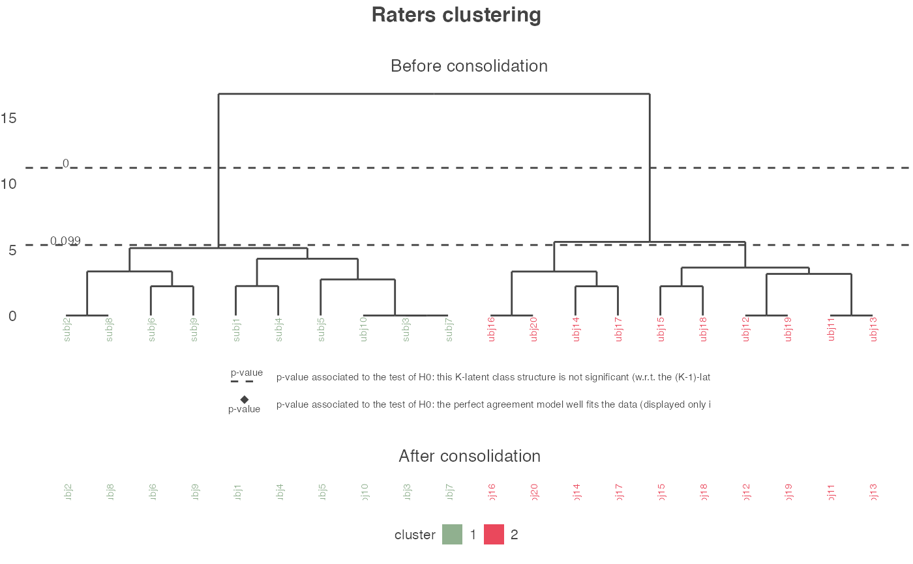
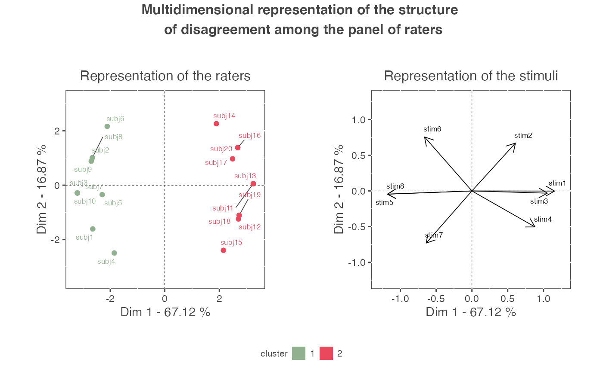

get_agreeclust_bin.RdAgreement-based clustering of binary ratings
get_agreeclust_bin( dta, model = "rating ~ rater + stimulus", max_clust = 10, approx_null = TRUE, paral_null = TRUE, consol = TRUE, id_info_rater = NULL, type_info_rater = NULL, id_info_stim = NULL, type_info_stim = NULL, graph = TRUE, ext_dev_Rstudio = FALSE )
| dta | A binary matrix or data frame of dimensions S x R (S=number of stimuli, R=number of raters). |
|---|---|
| model | A formula for the model. Either 'rating ~ rater + stimulus' (default), 'rating ~ rater', or 'rating ~ 1'. |
| max_clust | An integer specifying the maximum number of clusters of raters. By default, this number is fixed to 10. |
| approx_null | A boolean indicating if the null LRT distribution should be approximated using Satterthwaite's approximation. By default, the null LRT distribution is approximated. |
| paral_null | A boolean indicating if the computation of the null LRT distribution should be parallelized. By default, the computation of the null LRT distribution is parallelized on nb.cores-1 cores. During the process, a text file 'TestDendrogram_processing.txt' is created. |
| consol | A boolean indicating if a k-means consolidation of the partition of raters should be performed. By default, the partition is consolidated. |
| id_info_rater | A vector of integer elements composed of the identification of the lines containing the supplementary information (i.e. covariates) about the raters. This argument is optional and, by default, it is fixed to NULL, meaning that dta does not contain supplementary information about the raters. |
| type_info_rater | A vector of character elements composed of the type of the covariates about the raters. This vector must be of the same length that id.info.rater. A continuous covariate is associated to 'cont' and a categorical covariate is associated to 'cat'. This argument is optional and, by default, it is fixed to NULL, meaning that dta does not contain supplementary information about the raters. |
| id_info_stim | A vector of integer elements composed of the identification of the columns containing the supplementary information (i.e. covariates) about the stimuli. This argument is optional and, by default, it is fixed to NULL, meaning that dta does not contain supplementary information about the stimuli. |
| type_info_stim | A vector of character elements composed of the type of the covariates about the stimuli. This vector must be of the same length that id.info.stim. A continuous covariate is associated to 'cont' and a categorical covariate is associated to 'cat'. This argument is optional and, by default, it is fixed to NULL, meaning that dta does not contain supplementary information about the stimuli. |
| graph | A boolean specifying if the graphical outputs should be plotted or not. By default, they are plotted. |
| ext_dev_Rstudio | A boolean specifying if the graphical outputs should be plotted in the Rstudio plot pane or not. |
list
profiles_residualsA matrix of dimensions S x R (S=number of stimuli, R=number of raters) containing the residuals profiles of the raters obtained through the modelling of the set of binary ratings.
mat_disagA matrix of dimensions R x R (R=number of raters) corresponding to the dissimilarity matrix between the raters.
pval_dendroA vector containing the probabilities associated to the statistical test realized at each level of the dendrogram.
nb_clust_foundAn integer corresponding to the number of clusters found among the panel.
partitionA vector representing the partition of the raters (consolidated partition if consol = TRUE).
res_plot_segmentAll the graphical results of the segmentation.
res_pcaAll the results of the PCA.
charact_clustThe results of the description of the clusters by information describing the raters and/or the stimuli.
data(binary_data_for_example) res_pedag <- get_agreeclust_bin(dta = binary_data_for_example, id_info_rater = 9 : nrow(binary_data_for_example), type_info_rater = c(rep("cat", 2), "cont"), id_info_stim = 21 : ncol(binary_data_for_example), type_info_stim = c(rep("cont", 4), "cat"), paral_null = FALSE )#>#>#>#>#> Warning: glm.fit: fitted probabilities numerically 0 or 1 occurred#> Warning: glm.fit: fitted probabilities numerically 0 or 1 occurred#>#>#> Warning: glm.fit: fitted probabilities numerically 0 or 1 occurred#> Warning: glm.fit: fitted probabilities numerically 0 or 1 occurred#>#>#>#> Warning: glm.fit: fitted probabilities numerically 0 or 1 occurred#> Warning: glm.fit: fitted probabilities numerically 0 or 1 occurred#>#>#> Warning: glm.fit: fitted probabilities numerically 0 or 1 occurred#> Warning: glm.fit: fitted probabilities numerically 0 or 1 occurred#>#>#>#>#> Warning: glm.fit: fitted probabilities numerically 0 or 1 occurred#> Warning: glm.fit: fitted probabilities numerically 0 or 1 occurred#>#>#> Warning: glm.fit: fitted probabilities numerically 0 or 1 occurred#> Warning: glm.fit: fitted probabilities numerically 0 or 1 occurred#>#> Warning: glm.fit: fitted probabilities numerically 0 or 1 occurred#> Warning: glm.fit: fitted probabilities numerically 0 or 1 occurred#>#> Warning: glm.fit: fitted probabilities numerically 0 or 1 occurred#> Warning: glm.fit: fitted probabilities numerically 0 or 1 occurred#>#> Warning: glm.fit: fitted probabilities numerically 0 or 1 occurred#> Warning: glm.fit: fitted probabilities numerically 0 or 1 occurred#>#>#> Warning: glm.fit: fitted probabilities numerically 0 or 1 occurred#> Warning: glm.fit: fitted probabilities numerically 0 or 1 occurred#>#> Warning: glm.fit: fitted probabilities numerically 0 or 1 occurred#> Warning: glm.fit: fitted probabilities numerically 0 or 1 occurred#>#> Warning: glm.fit: fitted probabilities numerically 0 or 1 occurred#> Warning: glm.fit: fitted probabilities numerically 0 or 1 occurred#>#>#> Warning: glm.fit: fitted probabilities numerically 0 or 1 occurred#> Warning: glm.fit: fitted probabilities numerically 0 or 1 occurred#>#>#>#>#> Warning: glm.fit: fitted probabilities numerically 0 or 1 occurred#> Warning: glm.fit: fitted probabilities numerically 0 or 1 occurred#>#>#>#>#>#>#>#>#>#>#> Warning: glm.fit: fitted probabilities numerically 0 or 1 occurred#> Warning: glm.fit: fitted probabilities numerically 0 or 1 occurred#>#>#> Warning: glm.fit: fitted probabilities numerically 0 or 1 occurred#> Warning: glm.fit: fitted probabilities numerically 0 or 1 occurred#>#>#>#> Warning: glm.fit: fitted probabilities numerically 0 or 1 occurred#> Warning: glm.fit: fitted probabilities numerically 0 or 1 occurred#>#>#> Warning: glm.fit: fitted probabilities numerically 0 or 1 occurred#> Warning: glm.fit: fitted probabilities numerically 0 or 1 occurred#>#> Warning: glm.fit: fitted probabilities numerically 0 or 1 occurred#> Warning: glm.fit: fitted probabilities numerically 0 or 1 occurred#>#>#> Warning: glm.fit: fitted probabilities numerically 0 or 1 occurred#> Warning: glm.fit: fitted probabilities numerically 0 or 1 occurred#>#> Warning: glm.fit: fitted probabilities numerically 0 or 1 occurred#> Warning: glm.fit: fitted probabilities numerically 0 or 1 occurred#>#>#> Warning: glm.fit: fitted probabilities numerically 0 or 1 occurred#> Warning: glm.fit: fitted probabilities numerically 0 or 1 occurred#>#> Warning: glm.fit: fitted probabilities numerically 0 or 1 occurred#> Warning: glm.fit: fitted probabilities numerically 0 or 1 occurred#>#> Warning: glm.fit: fitted probabilities numerically 0 or 1 occurred#> Warning: glm.fit: fitted probabilities numerically 0 or 1 occurred#>#> Warning: glm.fit: fitted probabilities numerically 0 or 1 occurred#> Warning: glm.fit: fitted probabilities numerically 0 or 1 occurred#>#>#>#>#>#>#>#> Warning: glm.fit: fitted probabilities numerically 0 or 1 occurred#> Warning: glm.fit: fitted probabilities numerically 0 or 1 occurred#>#> Warning: glm.fit: fitted probabilities numerically 0 or 1 occurred#> Warning: glm.fit: fitted probabilities numerically 0 or 1 occurred#>#>#> Warning: glm.fit: fitted probabilities numerically 0 or 1 occurred#> Warning: glm.fit: fitted probabilities numerically 0 or 1 occurred#>#>#>#>#> Warning: glm.fit: fitted probabilities numerically 0 or 1 occurred#> Warning: glm.fit: fitted probabilities numerically 0 or 1 occurred#>#>#>#>#> Warning: glm.fit: fitted probabilities numerically 0 or 1 occurred#> Warning: glm.fit: fitted probabilities numerically 0 or 1 occurred#>#>#> Warning: glm.fit: fitted probabilities numerically 0 or 1 occurred#> Warning: glm.fit: fitted probabilities numerically 0 or 1 occurred#>#>#>#>#>#> Warning: glm.fit: fitted probabilities numerically 0 or 1 occurred#> Warning: glm.fit: fitted probabilities numerically 0 or 1 occurred#>#>#> Warning: glm.fit: fitted probabilities numerically 0 or 1 occurred#> Warning: glm.fit: fitted probabilities numerically 0 or 1 occurred#>#> Warning: glm.fit: fitted probabilities numerically 0 or 1 occurred#> Warning: glm.fit: fitted probabilities numerically 0 or 1 occurred#>#> Warning: glm.fit: fitted probabilities numerically 0 or 1 occurred#> Warning: glm.fit: fitted probabilities numerically 0 or 1 occurred#>#>#>#>#>#> Warning: glm.fit: fitted probabilities numerically 0 or 1 occurred#> Warning: glm.fit: fitted probabilities numerically 0 or 1 occurred#>#> Warning: glm.fit: fitted probabilities numerically 0 or 1 occurred#> Warning: glm.fit: fitted probabilities numerically 0 or 1 occurred#>#>#> Warning: glm.fit: fitted probabilities numerically 0 or 1 occurred#> Warning: glm.fit: fitted probabilities numerically 0 or 1 occurred#>#>#> Warning: glm.fit: fitted probabilities numerically 0 or 1 occurred#> Warning: glm.fit: fitted probabilities numerically 0 or 1 occurred#>#>#> Warning: glm.fit: fitted probabilities numerically 0 or 1 occurred#> Warning: glm.fit: fitted probabilities numerically 0 or 1 occurred#>#> Warning: glm.fit: fitted probabilities numerically 0 or 1 occurred#> Warning: glm.fit: fitted probabilities numerically 0 or 1 occurred#>#> Warning: glm.fit: fitted probabilities numerically 0 or 1 occurred#> Warning: glm.fit: fitted probabilities numerically 0 or 1 occurred#>#>#>#> Warning: glm.fit: fitted probabilities numerically 0 or 1 occurred#> Warning: glm.fit: fitted probabilities numerically 0 or 1 occurred#>#>#>#> Warning: glm.fit: fitted probabilities numerically 0 or 1 occurred#> Warning: glm.fit: fitted probabilities numerically 0 or 1 occurred#>#> Warning: glm.fit: fitted probabilities numerically 0 or 1 occurred#> Warning: glm.fit: fitted probabilities numerically 0 or 1 occurred#>#>#> Warning: glm.fit: fitted probabilities numerically 0 or 1 occurred#> Warning: glm.fit: fitted probabilities numerically 0 or 1 occurred#>#> Warning: glm.fit: fitted probabilities numerically 0 or 1 occurred#> Warning: glm.fit: fitted probabilities numerically 0 or 1 occurred#>#>#>#>#>#>#> Warning: glm.fit: fitted probabilities numerically 0 or 1 occurred#> Warning: glm.fit: fitted probabilities numerically 0 or 1 occurred#>#>#> Warning: glm.fit: fitted probabilities numerically 0 or 1 occurred#> Warning: glm.fit: fitted probabilities numerically 0 or 1 occurred#>#> Warning: glm.fit: fitted probabilities numerically 0 or 1 occurred#> Warning: glm.fit: fitted probabilities numerically 0 or 1 occurred#>#>#> Warning: glm.fit: fitted probabilities numerically 0 or 1 occurred#> Warning: glm.fit: fitted probabilities numerically 0 or 1 occurred#>#> Warning: glm.fit: fitted probabilities numerically 0 or 1 occurred#> Warning: glm.fit: fitted probabilities numerically 0 or 1 occurred#>#>#>#> Warning: glm.fit: fitted probabilities numerically 0 or 1 occurred#> Warning: glm.fit: fitted probabilities numerically 0 or 1 occurred#>#>#>#>#>#>#>#>#>#>#>#>#> Warning: glm.fit: fitted probabilities numerically 0 or 1 occurred#> Warning: glm.fit: fitted probabilities numerically 0 or 1 occurred#>#>#>#>#>#>#>#>#>#>#>#>#> Warning: glm.fit: fitted probabilities numerically 0 or 1 occurred#> Warning: glm.fit: fitted probabilities numerically 0 or 1 occurred#>#> Warning: glm.fit: fitted probabilities numerically 0 or 1 occurred#> Warning: glm.fit: fitted probabilities numerically 0 or 1 occurred#>#>#> Warning: glm.fit: fitted probabilities numerically 0 or 1 occurred#> Warning: glm.fit: fitted probabilities numerically 0 or 1 occurred#>#>#>#> Warning: glm.fit: fitted probabilities numerically 0 or 1 occurred#> Warning: glm.fit: fitted probabilities numerically 0 or 1 occurred#>#>#> Warning: glm.fit: fitted probabilities numerically 0 or 1 occurred#> Warning: glm.fit: fitted probabilities numerically 0 or 1 occurred#>#>#>#> Warning: glm.fit: fitted probabilities numerically 0 or 1 occurred#> Warning: glm.fit: fitted probabilities numerically 0 or 1 occurred#>#>#>#>#>#>#>#>#> Warning: glm.fit: fitted probabilities numerically 0 or 1 occurred#> Warning: glm.fit: fitted probabilities numerically 0 or 1 occurred#>#> Warning: glm.fit: fitted probabilities numerically 0 or 1 occurred#> Warning: glm.fit: fitted probabilities numerically 0 or 1 occurred#>#>#>#> Warning: glm.fit: fitted probabilities numerically 0 or 1 occurred#> Warning: glm.fit: fitted probabilities numerically 0 or 1 occurred#>#>#> Warning: glm.fit: fitted probabilities numerically 0 or 1 occurred#> Warning: glm.fit: fitted probabilities numerically 0 or 1 occurred#>#>#>#> Warning: glm.fit: fitted probabilities numerically 0 or 1 occurred#> Warning: glm.fit: fitted probabilities numerically 0 or 1 occurred#>#>#> Warning: glm.fit: fitted probabilities numerically 0 or 1 occurred#> Warning: glm.fit: fitted probabilities numerically 0 or 1 occurred#>#>#> Warning: glm.fit: fitted probabilities numerically 0 or 1 occurred#> Warning: glm.fit: fitted probabilities numerically 0 or 1 occurred#>#>#>#> Warning: glm.fit: fitted probabilities numerically 0 or 1 occurred#> Warning: glm.fit: fitted probabilities numerically 0 or 1 occurred#>#>#> Warning: glm.fit: fitted probabilities numerically 0 or 1 occurred#> Warning: glm.fit: fitted probabilities numerically 0 or 1 occurred#>#> Warning: glm.fit: fitted probabilities numerically 0 or 1 occurred#> Warning: glm.fit: fitted probabilities numerically 0 or 1 occurred#>#>#>#>#>#>#>#>#> Warning: glm.fit: fitted probabilities numerically 0 or 1 occurred#> Warning: glm.fit: fitted probabilities numerically 0 or 1 occurred#>#>#>#> Warning: glm.fit: fitted probabilities numerically 0 or 1 occurred#> Warning: glm.fit: fitted probabilities numerically 0 or 1 occurred#>#> Warning: glm.fit: fitted probabilities numerically 0 or 1 occurred#> Warning: glm.fit: fitted probabilities numerically 0 or 1 occurred#>#> Warning: glm.fit: fitted probabilities numerically 0 or 1 occurred#> Warning: glm.fit: fitted probabilities numerically 0 or 1 occurred#>#>#>#> Warning: glm.fit: fitted probabilities numerically 0 or 1 occurred#> Warning: glm.fit: fitted probabilities numerically 0 or 1 occurred#>#>#>#>#>#> Warning: glm.fit: fitted probabilities numerically 0 or 1 occurred#> Warning: glm.fit: fitted probabilities numerically 0 or 1 occurred#>#> Warning: glm.fit: fitted probabilities numerically 0 or 1 occurred#> Warning: glm.fit: fitted probabilities numerically 0 or 1 occurred#>#>#>#> Warning: glm.fit: fitted probabilities numerically 0 or 1 occurred#> Warning: glm.fit: fitted probabilities numerically 0 or 1 occurred#>#> Warning: glm.fit: fitted probabilities numerically 0 or 1 occurred#> Warning: glm.fit: fitted probabilities numerically 0 or 1 occurred#>#>#>#>#> Warning: glm.fit: fitted probabilities numerically 0 or 1 occurred#> Warning: glm.fit: fitted probabilities numerically 0 or 1 occurred#>#> Warning: glm.fit: fitted probabilities numerically 0 or 1 occurred#> Warning: glm.fit: fitted probabilities numerically 0 or 1 occurred#>#> Warning: glm.fit: fitted probabilities numerically 0 or 1 occurred#> Warning: glm.fit: fitted probabilities numerically 0 or 1 occurred#>#>#> Warning: glm.fit: fitted probabilities numerically 0 or 1 occurred#> Warning: glm.fit: fitted probabilities numerically 0 or 1 occurred#>#>#>#>#>#>#>#>#>#>#> Warning: glm.fit: fitted probabilities numerically 0 or 1 occurred#> Warning: glm.fit: fitted probabilities numerically 0 or 1 occurred#>#>#> Warning: glm.fit: fitted probabilities numerically 0 or 1 occurred#> Warning: glm.fit: fitted probabilities numerically 0 or 1 occurred#>#>#> Warning: glm.fit: fitted probabilities numerically 0 or 1 occurred#> Warning: glm.fit: fitted probabilities numerically 0 or 1 occurred#>#>#> Warning: glm.fit: fitted probabilities numerically 0 or 1 occurred#> Warning: glm.fit: fitted probabilities numerically 0 or 1 occurred#>#>#>#> Warning: glm.fit: fitted probabilities numerically 0 or 1 occurred#> Warning: glm.fit: fitted probabilities numerically 0 or 1 occurred#>#> Warning: glm.fit: fitted probabilities numerically 0 or 1 occurred#> Warning: glm.fit: fitted probabilities numerically 0 or 1 occurred#>#>#> Warning: glm.fit: fitted probabilities numerically 0 or 1 occurred#> Warning: glm.fit: fitted probabilities numerically 0 or 1 occurred#>#>#> Warning: glm.fit: fitted probabilities numerically 0 or 1 occurred#> Warning: glm.fit: fitted probabilities numerically 0 or 1 occurred#>#> Warning: glm.fit: fitted probabilities numerically 0 or 1 occurred#> Warning: glm.fit: fitted probabilities numerically 0 or 1 occurred#>#>#>#>#> Warning: glm.fit: fitted probabilities numerically 0 or 1 occurred#> Warning: glm.fit: fitted probabilities numerically 0 or 1 occurred#>#>#>#>#> Warning: glm.fit: fitted probabilities numerically 0 or 1 occurred#> Warning: glm.fit: fitted probabilities numerically 0 or 1 occurred#>#> Warning: glm.fit: fitted probabilities numerically 0 or 1 occurred#> Warning: glm.fit: fitted probabilities numerically 0 or 1 occurred#> Warning: glm.fit: fitted probabilities numerically 0 or 1 occurred#> Warning: glm.fit: fitted probabilities numerically 0 or 1 occurred#>#> Warning: glm.fit: fitted probabilities numerically 0 or 1 occurred#> Warning: glm.fit: fitted probabilities numerically 0 or 1 occurred#> Warning: glm.fit: algorithm did not converge#> Warning: glm.fit: fitted probabilities numerically 0 or 1 occurred#> Warning: glm.fit: fitted probabilities numerically 0 or 1 occurred#>#> Warning: glm.fit: fitted probabilities numerically 0 or 1 occurred#> Warning: glm.fit: fitted probabilities numerically 0 or 1 occurred#> Warning: glm.fit: fitted probabilities numerically 0 or 1 occurred#> Warning: glm.fit: fitted probabilities numerically 0 or 1 occurred#>#> Warning: glm.fit: fitted probabilities numerically 0 or 1 occurred#> Warning: glm.fit: fitted probabilities numerically 0 or 1 occurred#> Warning: glm.fit: fitted probabilities numerically 0 or 1 occurred#> Warning: glm.fit: fitted probabilities numerically 0 or 1 occurred#>#> Warning: glm.fit: fitted probabilities numerically 0 or 1 occurred#> Warning: glm.fit: fitted probabilities numerically 0 or 1 occurred#> Warning: glm.fit: fitted probabilities numerically 0 or 1 occurred#> Warning: glm.fit: fitted probabilities numerically 0 or 1 occurred#>#> Warning: glm.fit: algorithm did not converge#> Warning: glm.fit: fitted probabilities numerically 0 or 1 occurred#> Warning: glm.fit: algorithm did not converge#> Warning: glm.fit: fitted probabilities numerically 0 or 1 occurred#> Warning: glm.fit: algorithm did not converge#> Warning: glm.fit: fitted probabilities numerically 0 or 1 occurred#> Warning: glm.fit: algorithm did not converge#> Warning: glm.fit: fitted probabilities numerically 0 or 1 occurred#>#> Warning: glm.fit: fitted probabilities numerically 0 or 1 occurred#> Warning: glm.fit: fitted probabilities numerically 0 or 1 occurred#> Warning: glm.fit: fitted probabilities numerically 0 or 1 occurred#> Warning: glm.fit: fitted probabilities numerically 0 or 1 occurred#>#> Warning: glm.fit: algorithm did not converge#> Warning: glm.fit: fitted probabilities numerically 0 or 1 occurred#> Warning: glm.fit: fitted probabilities numerically 0 or 1 occurred#> Warning: glm.fit: algorithm did not converge#> Warning: glm.fit: fitted probabilities numerically 0 or 1 occurred#> Warning: glm.fit: fitted probabilities numerically 0 or 1 occurred#>#> Warning: glm.fit: fitted probabilities numerically 0 or 1 occurred#> Warning: glm.fit: fitted probabilities numerically 0 or 1 occurred#> Warning: glm.fit: fitted probabilities numerically 0 or 1 occurred#> Warning: glm.fit: fitted probabilities numerically 0 or 1 occurred#>#> Warning: glm.fit: algorithm did not converge#> Warning: glm.fit: fitted probabilities numerically 0 or 1 occurred#> Warning: glm.fit: fitted probabilities numerically 0 or 1 occurred#> Warning: glm.fit: fitted probabilities numerically 0 or 1 occurred#> Warning: glm.fit: fitted probabilities numerically 0 or 1 occurred#>#> Warning: glm.fit: fitted probabilities numerically 0 or 1 occurred#> Warning: glm.fit: fitted probabilities numerically 0 or 1 occurred#> Warning: glm.fit: fitted probabilities numerically 0 or 1 occurred#> Warning: glm.fit: fitted probabilities numerically 0 or 1 occurred#>#> Warning: glm.fit: fitted probabilities numerically 0 or 1 occurred#> Warning: glm.fit: fitted probabilities numerically 0 or 1 occurred#> Warning: glm.fit: fitted probabilities numerically 0 or 1 occurred#> Warning: glm.fit: fitted probabilities numerically 0 or 1 occurred#>#> Warning: glm.fit: fitted probabilities numerically 0 or 1 occurred#> Warning: glm.fit: fitted probabilities numerically 0 or 1 occurred#> Warning: glm.fit: fitted probabilities numerically 0 or 1 occurred#> Warning: glm.fit: fitted probabilities numerically 0 or 1 occurred#>#> Warning: glm.fit: fitted probabilities numerically 0 or 1 occurred#> Warning: glm.fit: fitted probabilities numerically 0 or 1 occurred#> Warning: glm.fit: fitted probabilities numerically 0 or 1 occurred#> Warning: glm.fit: fitted probabilities numerically 0 or 1 occurred#>#> Warning: glm.fit: fitted probabilities numerically 0 or 1 occurred#> Warning: glm.fit: fitted probabilities numerically 0 or 1 occurred#> Warning: glm.fit: fitted probabilities numerically 0 or 1 occurred#> Warning: glm.fit: fitted probabilities numerically 0 or 1 occurred#>#> Warning: glm.fit: fitted probabilities numerically 0 or 1 occurred#> Warning: glm.fit: fitted probabilities numerically 0 or 1 occurred#> Warning: glm.fit: fitted probabilities numerically 0 or 1 occurred#> Warning: glm.fit: fitted probabilities numerically 0 or 1 occurred#>#> Warning: glm.fit: fitted probabilities numerically 0 or 1 occurred#> Warning: glm.fit: fitted probabilities numerically 0 or 1 occurred#> Warning: glm.fit: fitted probabilities numerically 0 or 1 occurred#> Warning: glm.fit: fitted probabilities numerically 0 or 1 occurred#>#> Warning: glm.fit: fitted probabilities numerically 0 or 1 occurred#> Warning: glm.fit: fitted probabilities numerically 0 or 1 occurred#> Warning: glm.fit: fitted probabilities numerically 0 or 1 occurred#> Warning: glm.fit: fitted probabilities numerically 0 or 1 occurred#>#> Warning: glm.fit: fitted probabilities numerically 0 or 1 occurred#> Warning: glm.fit: fitted probabilities numerically 0 or 1 occurred#> Warning: glm.fit: fitted probabilities numerically 0 or 1 occurred#> Warning: glm.fit: fitted probabilities numerically 0 or 1 occurred#>#> Warning: glm.fit: fitted probabilities numerically 0 or 1 occurred#> Warning: glm.fit: fitted probabilities numerically 0 or 1 occurred#> Warning: glm.fit: fitted probabilities numerically 0 or 1 occurred#> Warning: glm.fit: fitted probabilities numerically 0 or 1 occurred#>#> Warning: glm.fit: fitted probabilities numerically 0 or 1 occurred#> Warning: glm.fit: fitted probabilities numerically 0 or 1 occurred#> Warning: glm.fit: fitted probabilities numerically 0 or 1 occurred#> Warning: glm.fit: fitted probabilities numerically 0 or 1 occurred#>#> Warning: glm.fit: fitted probabilities numerically 0 or 1 occurred#> Warning: glm.fit: fitted probabilities numerically 0 or 1 occurred#> Warning: glm.fit: fitted probabilities numerically 0 or 1 occurred#> Warning: glm.fit: fitted probabilities numerically 0 or 1 occurred#>#> Warning: glm.fit: fitted probabilities numerically 0 or 1 occurred#> Warning: glm.fit: fitted probabilities numerically 0 or 1 occurred#> Warning: glm.fit: algorithm did not converge#> Warning: glm.fit: fitted probabilities numerically 0 or 1 occurred#> Warning: glm.fit: algorithm did not converge#> Warning: glm.fit: fitted probabilities numerically 0 or 1 occurred#>#> Warning: glm.fit: algorithm did not converge#> Warning: glm.fit: fitted probabilities numerically 0 or 1 occurred#> Warning: glm.fit: fitted probabilities numerically 0 or 1 occurred#> Warning: glm.fit: algorithm did not converge#> Warning: glm.fit: fitted probabilities numerically 0 or 1 occurred#> Warning: glm.fit: fitted probabilities numerically 0 or 1 occurred#>#> Warning: glm.fit: fitted probabilities numerically 0 or 1 occurred#> Warning: glm.fit: fitted probabilities numerically 0 or 1 occurred#> Warning: glm.fit: algorithm did not converge#> Warning: glm.fit: fitted probabilities numerically 0 or 1 occurred#> Warning: glm.fit: fitted probabilities numerically 0 or 1 occurred#>#> Warning: glm.fit: fitted probabilities numerically 0 or 1 occurred#> Warning: glm.fit: fitted probabilities numerically 0 or 1 occurred#> Warning: glm.fit: fitted probabilities numerically 0 or 1 occurred#> Warning: glm.fit: fitted probabilities numerically 0 or 1 occurred#>#> Warning: glm.fit: fitted probabilities numerically 0 or 1 occurred#> Warning: glm.fit: fitted probabilities numerically 0 or 1 occurred#> Warning: glm.fit: algorithm did not converge#> Warning: glm.fit: fitted probabilities numerically 0 or 1 occurred#> Warning: glm.fit: fitted probabilities numerically 0 or 1 occurred#>#> Warning: glm.fit: fitted probabilities numerically 0 or 1 occurred#> Warning: glm.fit: fitted probabilities numerically 0 or 1 occurred#> Warning: glm.fit: algorithm did not converge#> Warning: glm.fit: fitted probabilities numerically 0 or 1 occurred#> Warning: glm.fit: fitted probabilities numerically 0 or 1 occurred#>#> Warning: glm.fit: fitted probabilities numerically 0 or 1 occurred#> Warning: glm.fit: fitted probabilities numerically 0 or 1 occurred#> Warning: glm.fit: fitted probabilities numerically 0 or 1 occurred#> Warning: glm.fit: fitted probabilities numerically 0 or 1 occurred#>#> Warning: glm.fit: fitted probabilities numerically 0 or 1 occurred#> Warning: glm.fit: fitted probabilities numerically 0 or 1 occurred#> Warning: glm.fit: fitted probabilities numerically 0 or 1 occurred#> Warning: glm.fit: fitted probabilities numerically 0 or 1 occurred#>#> Warning: glm.fit: fitted probabilities numerically 0 or 1 occurred#> Warning: glm.fit: fitted probabilities numerically 0 or 1 occurred#> Warning: glm.fit: fitted probabilities numerically 0 or 1 occurred#> Warning: glm.fit: fitted probabilities numerically 0 or 1 occurred#>#> Warning: glm.fit: fitted probabilities numerically 0 or 1 occurred#> Warning: glm.fit: fitted probabilities numerically 0 or 1 occurred#> Warning: glm.fit: algorithm did not converge#> Warning: glm.fit: fitted probabilities numerically 0 or 1 occurred#> Warning: glm.fit: fitted probabilities numerically 0 or 1 occurred#>#> Warning: glm.fit: fitted probabilities numerically 0 or 1 occurred#> Warning: glm.fit: fitted probabilities numerically 0 or 1 occurred#> Warning: glm.fit: fitted probabilities numerically 0 or 1 occurred#> Warning: glm.fit: fitted probabilities numerically 0 or 1 occurred#>#> Warning: glm.fit: fitted probabilities numerically 0 or 1 occurred#> Warning: glm.fit: fitted probabilities numerically 0 or 1 occurred#> Warning: glm.fit: fitted probabilities numerically 0 or 1 occurred#> Warning: glm.fit: fitted probabilities numerically 0 or 1 occurred#>#> Warning: glm.fit: algorithm did not converge#> Warning: glm.fit: fitted probabilities numerically 0 or 1 occurred#> Warning: glm.fit: fitted probabilities numerically 0 or 1 occurred#> Warning: glm.fit: algorithm did not converge#> Warning: glm.fit: fitted probabilities numerically 0 or 1 occurred#> Warning: glm.fit: algorithm did not converge#> Warning: glm.fit: fitted probabilities numerically 0 or 1 occurred#>#> Warning: glm.fit: algorithm did not converge#> Warning: glm.fit: fitted probabilities numerically 0 or 1 occurred#> Warning: glm.fit: fitted probabilities numerically 0 or 1 occurred#> Warning: glm.fit: fitted probabilities numerically 0 or 1 occurred#> Warning: glm.fit: fitted probabilities numerically 0 or 1 occurred#>#> Warning: glm.fit: fitted probabilities numerically 0 or 1 occurred#> Warning: glm.fit: fitted probabilities numerically 0 or 1 occurred#> Warning: glm.fit: fitted probabilities numerically 0 or 1 occurred#> Warning: glm.fit: fitted probabilities numerically 0 or 1 occurred#>#> Warning: glm.fit: algorithm did not converge#> Warning: glm.fit: fitted probabilities numerically 0 or 1 occurred#> Warning: glm.fit: fitted probabilities numerically 0 or 1 occurred#> Warning: glm.fit: algorithm did not converge#> Warning: glm.fit: fitted probabilities numerically 0 or 1 occurred#> Warning: glm.fit: fitted probabilities numerically 0 or 1 occurred#>#> Warning: glm.fit: fitted probabilities numerically 0 or 1 occurred#> Warning: glm.fit: fitted probabilities numerically 0 or 1 occurred#> Warning: glm.fit: fitted probabilities numerically 0 or 1 occurred#> Warning: glm.fit: fitted probabilities numerically 0 or 1 occurred#>#> Warning: glm.fit: fitted probabilities numerically 0 or 1 occurred#> Warning: glm.fit: fitted probabilities numerically 0 or 1 occurred#> Warning: glm.fit: fitted probabilities numerically 0 or 1 occurred#> Warning: glm.fit: fitted probabilities numerically 0 or 1 occurred#>#> Warning: glm.fit: fitted probabilities numerically 0 or 1 occurred#> Warning: glm.fit: fitted probabilities numerically 0 or 1 occurred#> Warning: glm.fit: fitted probabilities numerically 0 or 1 occurred#> Warning: glm.fit: fitted probabilities numerically 0 or 1 occurred#>#> Warning: glm.fit: fitted probabilities numerically 0 or 1 occurred#> Warning: glm.fit: fitted probabilities numerically 0 or 1 occurred#> Warning: glm.fit: fitted probabilities numerically 0 or 1 occurred#> Warning: glm.fit: fitted probabilities numerically 0 or 1 occurred#>#> Warning: glm.fit: fitted probabilities numerically 0 or 1 occurred#> Warning: glm.fit: fitted probabilities numerically 0 or 1 occurred#> Warning: glm.fit: fitted probabilities numerically 0 or 1 occurred#> Warning: glm.fit: fitted probabilities numerically 0 or 1 occurred#>#> Warning: glm.fit: algorithm did not converge#> Warning: glm.fit: fitted probabilities numerically 0 or 1 occurred#> Warning: glm.fit: fitted probabilities numerically 0 or 1 occurred#> Warning: glm.fit: fitted probabilities numerically 0 or 1 occurred#> Warning: glm.fit: fitted probabilities numerically 0 or 1 occurred#>#> Warning: glm.fit: algorithm did not converge#> Warning: glm.fit: fitted probabilities numerically 0 or 1 occurred#> Warning: glm.fit: fitted probabilities numerically 0 or 1 occurred#> Warning: glm.fit: fitted probabilities numerically 0 or 1 occurred#> Warning: glm.fit: fitted probabilities numerically 0 or 1 occurred#>#> Warning: glm.fit: fitted probabilities numerically 0 or 1 occurred#> Warning: glm.fit: fitted probabilities numerically 0 or 1 occurred#> Warning: glm.fit: fitted probabilities numerically 0 or 1 occurred#> Warning: glm.fit: fitted probabilities numerically 0 or 1 occurred#>#> Warning: glm.fit: fitted probabilities numerically 0 or 1 occurred#> Warning: glm.fit: fitted probabilities numerically 0 or 1 occurred#> Warning: glm.fit: fitted probabilities numerically 0 or 1 occurred#> Warning: glm.fit: fitted probabilities numerically 0 or 1 occurred#>#> Warning: glm.fit: algorithm did not converge#> Warning: glm.fit: fitted probabilities numerically 0 or 1 occurred#> Warning: glm.fit: algorithm did not converge#> Warning: glm.fit: fitted probabilities numerically 0 or 1 occurred#> Warning: glm.fit: algorithm did not converge#> Warning: glm.fit: fitted probabilities numerically 0 or 1 occurred#> Warning: glm.fit: algorithm did not converge#> Warning: glm.fit: fitted probabilities numerically 0 or 1 occurred#>#> Warning: glm.fit: algorithm did not converge#> Warning: glm.fit: fitted probabilities numerically 0 or 1 occurred#> Warning: glm.fit: fitted probabilities numerically 0 or 1 occurred#> Warning: glm.fit: fitted probabilities numerically 0 or 1 occurred#> Warning: glm.fit: fitted probabilities numerically 0 or 1 occurred#>#> Warning: glm.fit: fitted probabilities numerically 0 or 1 occurred#> Warning: glm.fit: fitted probabilities numerically 0 or 1 occurred#> Warning: glm.fit: fitted probabilities numerically 0 or 1 occurred#> Warning: glm.fit: fitted probabilities numerically 0 or 1 occurred#>#> Warning: glm.fit: fitted probabilities numerically 0 or 1 occurred#> Warning: glm.fit: fitted probabilities numerically 0 or 1 occurred#> Warning: glm.fit: algorithm did not converge#> Warning: glm.fit: fitted probabilities numerically 0 or 1 occurred#> Warning: glm.fit: fitted probabilities numerically 0 or 1 occurred#>#> Warning: glm.fit: fitted probabilities numerically 0 or 1 occurred#> Warning: glm.fit: fitted probabilities numerically 0 or 1 occurred#> Warning: glm.fit: algorithm did not converge#> Warning: glm.fit: fitted probabilities numerically 0 or 1 occurred#> Warning: glm.fit: fitted probabilities numerically 0 or 1 occurred#>#> Warning: glm.fit: fitted probabilities numerically 0 or 1 occurred#> Warning: glm.fit: fitted probabilities numerically 0 or 1 occurred#> Warning: glm.fit: algorithm did not converge#> Warning: glm.fit: fitted probabilities numerically 0 or 1 occurred#> Warning: glm.fit: algorithm did not converge#> Warning: glm.fit: fitted probabilities numerically 0 or 1 occurred#>#> Warning: glm.fit: fitted probabilities numerically 0 or 1 occurred#> Warning: glm.fit: fitted probabilities numerically 0 or 1 occurred#> Warning: glm.fit: fitted probabilities numerically 0 or 1 occurred#> Warning: glm.fit: fitted probabilities numerically 0 or 1 occurred#>#> Warning: glm.fit: fitted probabilities numerically 0 or 1 occurred#> Warning: glm.fit: fitted probabilities numerically 0 or 1 occurred#> Warning: glm.fit: algorithm did not converge#> Warning: glm.fit: fitted probabilities numerically 0 or 1 occurred#> Warning: glm.fit: fitted probabilities numerically 0 or 1 occurred#>#> Warning: glm.fit: fitted probabilities numerically 0 or 1 occurred#> Warning: glm.fit: fitted probabilities numerically 0 or 1 occurred#> Warning: glm.fit: fitted probabilities numerically 0 or 1 occurred#> Warning: glm.fit: fitted probabilities numerically 0 or 1 occurred#>#> Warning: glm.fit: fitted probabilities numerically 0 or 1 occurred#> Warning: glm.fit: fitted probabilities numerically 0 or 1 occurred#> Warning: glm.fit: fitted probabilities numerically 0 or 1 occurred#> Warning: glm.fit: fitted probabilities numerically 0 or 1 occurred#>#> Warning: glm.fit: fitted probabilities numerically 0 or 1 occurred#> Warning: glm.fit: fitted probabilities numerically 0 or 1 occurred#> Warning: glm.fit: fitted probabilities numerically 0 or 1 occurred#> Warning: glm.fit: fitted probabilities numerically 0 or 1 occurred#>#> Warning: glm.fit: fitted probabilities numerically 0 or 1 occurred#> Warning: glm.fit: fitted probabilities numerically 0 or 1 occurred#> Warning: glm.fit: fitted probabilities numerically 0 or 1 occurred#> Warning: glm.fit: fitted probabilities numerically 0 or 1 occurred#>#> Warning: glm.fit: fitted probabilities numerically 0 or 1 occurred#> Warning: glm.fit: fitted probabilities numerically 0 or 1 occurred#> Warning: glm.fit: algorithm did not converge#> Warning: glm.fit: fitted probabilities numerically 0 or 1 occurred#> Warning: glm.fit: fitted probabilities numerically 0 or 1 occurred#>#> Warning: glm.fit: fitted probabilities numerically 0 or 1 occurred#> Warning: glm.fit: fitted probabilities numerically 0 or 1 occurred#> Warning: glm.fit: fitted probabilities numerically 0 or 1 occurred#> Warning: glm.fit: fitted probabilities numerically 0 or 1 occurred#>#> Warning: glm.fit: fitted probabilities numerically 0 or 1 occurred#> Warning: glm.fit: fitted probabilities numerically 0 or 1 occurred#> Warning: glm.fit: fitted probabilities numerically 0 or 1 occurred#> Warning: glm.fit: fitted probabilities numerically 0 or 1 occurred#>#> Warning: glm.fit: fitted probabilities numerically 0 or 1 occurred#> Warning: glm.fit: fitted probabilities numerically 0 or 1 occurred#> Warning: glm.fit: fitted probabilities numerically 0 or 1 occurred#> Warning: glm.fit: fitted probabilities numerically 0 or 1 occurred#>#> Warning: glm.fit: fitted probabilities numerically 0 or 1 occurred#> Warning: glm.fit: fitted probabilities numerically 0 or 1 occurred#> Warning: glm.fit: fitted probabilities numerically 0 or 1 occurred#> Warning: glm.fit: fitted probabilities numerically 0 or 1 occurred#>#> Warning: glm.fit: fitted probabilities numerically 0 or 1 occurred#> Warning: glm.fit: fitted probabilities numerically 0 or 1 occurred#> Warning: glm.fit: fitted probabilities numerically 0 or 1 occurred#> Warning: glm.fit: fitted probabilities numerically 0 or 1 occurred#>#> Warning: glm.fit: fitted probabilities numerically 0 or 1 occurred#> Warning: glm.fit: fitted probabilities numerically 0 or 1 occurred#> Warning: glm.fit: fitted probabilities numerically 0 or 1 occurred#> Warning: glm.fit: fitted probabilities numerically 0 or 1 occurred#>#> Warning: glm.fit: fitted probabilities numerically 0 or 1 occurred#> Warning: glm.fit: fitted probabilities numerically 0 or 1 occurred#> Warning: glm.fit: fitted probabilities numerically 0 or 1 occurred#> Warning: glm.fit: fitted probabilities numerically 0 or 1 occurred#>#> Warning: glm.fit: fitted probabilities numerically 0 or 1 occurred#> Warning: glm.fit: fitted probabilities numerically 0 or 1 occurred#> Warning: glm.fit: fitted probabilities numerically 0 or 1 occurred#> Warning: glm.fit: fitted probabilities numerically 0 or 1 occurred#>#> Warning: glm.fit: fitted probabilities numerically 0 or 1 occurred#> Warning: glm.fit: fitted probabilities numerically 0 or 1 occurred#> Warning: glm.fit: fitted probabilities numerically 0 or 1 occurred#> Warning: glm.fit: fitted probabilities numerically 0 or 1 occurred#>#> Warning: glm.fit: fitted probabilities numerically 0 or 1 occurred#> Warning: glm.fit: fitted probabilities numerically 0 or 1 occurred#> Warning: glm.fit: fitted probabilities numerically 0 or 1 occurred#> Warning: glm.fit: fitted probabilities numerically 0 or 1 occurred#>#> Warning: glm.fit: fitted probabilities numerically 0 or 1 occurred#> Warning: glm.fit: fitted probabilities numerically 0 or 1 occurred#> Warning: glm.fit: fitted probabilities numerically 0 or 1 occurred#> Warning: glm.fit: fitted probabilities numerically 0 or 1 occurred#>#> Warning: glm.fit: fitted probabilities numerically 0 or 1 occurred#> Warning: glm.fit: fitted probabilities numerically 0 or 1 occurred#> Warning: glm.fit: fitted probabilities numerically 0 or 1 occurred#> Warning: glm.fit: fitted probabilities numerically 0 or 1 occurred#>#> Warning: glm.fit: algorithm did not converge#> Warning: glm.fit: fitted probabilities numerically 0 or 1 occurred#> Warning: glm.fit: algorithm did not converge#> Warning: glm.fit: fitted probabilities numerically 0 or 1 occurred#> Warning: glm.fit: algorithm did not converge#> Warning: glm.fit: fitted probabilities numerically 0 or 1 occurred#> Warning: glm.fit: fitted probabilities numerically 0 or 1 occurred#>#> Warning: glm.fit: fitted probabilities numerically 0 or 1 occurred#> Warning: glm.fit: fitted probabilities numerically 0 or 1 occurred#> Warning: glm.fit: algorithm did not converge#> Warning: glm.fit: fitted probabilities numerically 0 or 1 occurred#> Warning: glm.fit: fitted probabilities numerically 0 or 1 occurred#>#> Warning: glm.fit: fitted probabilities numerically 0 or 1 occurred#> Warning: glm.fit: fitted probabilities numerically 0 or 1 occurred#> Warning: glm.fit: fitted probabilities numerically 0 or 1 occurred#> Warning: glm.fit: fitted probabilities numerically 0 or 1 occurred#>#> Warning: glm.fit: fitted probabilities numerically 0 or 1 occurred#> Warning: glm.fit: fitted probabilities numerically 0 or 1 occurred#> Warning: glm.fit: fitted probabilities numerically 0 or 1 occurred#> Warning: glm.fit: fitted probabilities numerically 0 or 1 occurred#>#> Warning: glm.fit: fitted probabilities numerically 0 or 1 occurred#> Warning: glm.fit: fitted probabilities numerically 0 or 1 occurred#> Warning: glm.fit: fitted probabilities numerically 0 or 1 occurred#> Warning: glm.fit: fitted probabilities numerically 0 or 1 occurred#>#> Warning: glm.fit: fitted probabilities numerically 0 or 1 occurred#> Warning: glm.fit: fitted probabilities numerically 0 or 1 occurred#> Warning: glm.fit: fitted probabilities numerically 0 or 1 occurred#> Warning: glm.fit: fitted probabilities numerically 0 or 1 occurred#>#> Warning: glm.fit: algorithm did not converge#> Warning: glm.fit: fitted probabilities numerically 0 or 1 occurred#> Warning: glm.fit: fitted probabilities numerically 0 or 1 occurred#> Warning: glm.fit: fitted probabilities numerically 0 or 1 occurred#> Warning: glm.fit: fitted probabilities numerically 0 or 1 occurred#>#> Warning: glm.fit: fitted probabilities numerically 0 or 1 occurred#> Warning: glm.fit: fitted probabilities numerically 0 or 1 occurred#> Warning: glm.fit: fitted probabilities numerically 0 or 1 occurred#> Warning: glm.fit: fitted probabilities numerically 0 or 1 occurred#>#> Warning: glm.fit: fitted probabilities numerically 0 or 1 occurred#> Warning: glm.fit: fitted probabilities numerically 0 or 1 occurred#> Warning: glm.fit: fitted probabilities numerically 0 or 1 occurred#> Warning: glm.fit: fitted probabilities numerically 0 or 1 occurred#>#> Warning: glm.fit: fitted probabilities numerically 0 or 1 occurred#> Warning: glm.fit: fitted probabilities numerically 0 or 1 occurred#> Warning: glm.fit: fitted probabilities numerically 0 or 1 occurred#> Warning: glm.fit: fitted probabilities numerically 0 or 1 occurred#>#> Warning: glm.fit: fitted probabilities numerically 0 or 1 occurred#> Warning: glm.fit: fitted probabilities numerically 0 or 1 occurred#> Warning: glm.fit: fitted probabilities numerically 0 or 1 occurred#> Warning: glm.fit: fitted probabilities numerically 0 or 1 occurred#>#> Warning: glm.fit: fitted probabilities numerically 0 or 1 occurred#> Warning: glm.fit: fitted probabilities numerically 0 or 1 occurred#> Warning: glm.fit: fitted probabilities numerically 0 or 1 occurred#> Warning: glm.fit: fitted probabilities numerically 0 or 1 occurred#>#> Warning: glm.fit: fitted probabilities numerically 0 or 1 occurred#> Warning: glm.fit: fitted probabilities numerically 0 or 1 occurred#> Warning: glm.fit: fitted probabilities numerically 0 or 1 occurred#> Warning: glm.fit: fitted probabilities numerically 0 or 1 occurred#>#> Warning: glm.fit: fitted probabilities numerically 0 or 1 occurred#> Warning: glm.fit: fitted probabilities numerically 0 or 1 occurred#> Warning: glm.fit: fitted probabilities numerically 0 or 1 occurred#> Warning: glm.fit: fitted probabilities numerically 0 or 1 occurred#>#> Warning: glm.fit: fitted probabilities numerically 0 or 1 occurred#> Warning: glm.fit: fitted probabilities numerically 0 or 1 occurred#> Warning: glm.fit: fitted probabilities numerically 0 or 1 occurred#> Warning: glm.fit: fitted probabilities numerically 0 or 1 occurred#>#> Warning: glm.fit: fitted probabilities numerically 0 or 1 occurred#> Warning: glm.fit: fitted probabilities numerically 0 or 1 occurred#> Warning: glm.fit: fitted probabilities numerically 0 or 1 occurred#> Warning: glm.fit: fitted probabilities numerically 0 or 1 occurred#>#> Warning: glm.fit: fitted probabilities numerically 0 or 1 occurred#> Warning: glm.fit: fitted probabilities numerically 0 or 1 occurred#> Warning: glm.fit: fitted probabilities numerically 0 or 1 occurred#> Warning: glm.fit: fitted probabilities numerically 0 or 1 occurred#>#> Warning: glm.fit: fitted probabilities numerically 0 or 1 occurred#> Warning: glm.fit: fitted probabilities numerically 0 or 1 occurred#> Warning: glm.fit: fitted probabilities numerically 0 or 1 occurred#> Warning: glm.fit: fitted probabilities numerically 0 or 1 occurred#>#> Warning: glm.fit: fitted probabilities numerically 0 or 1 occurred#> Warning: glm.fit: fitted probabilities numerically 0 or 1 occurred#> Warning: glm.fit: algorithm did not converge#> Warning: glm.fit: fitted probabilities numerically 0 or 1 occurred#> Warning: glm.fit: fitted probabilities numerically 0 or 1 occurred#>#> Warning: glm.fit: algorithm did not converge#> Warning: glm.fit: fitted probabilities numerically 0 or 1 occurred#> Warning: glm.fit: algorithm did not converge#> Warning: glm.fit: fitted probabilities numerically 0 or 1 occurred#> Warning: glm.fit: fitted probabilities numerically 0 or 1 occurred#> Warning: glm.fit: fitted probabilities numerically 0 or 1 occurred#>#> Warning: glm.fit: fitted probabilities numerically 0 or 1 occurred#> Warning: glm.fit: fitted probabilities numerically 0 or 1 occurred#> Warning: glm.fit: fitted probabilities numerically 0 or 1 occurred#> Warning: glm.fit: fitted probabilities numerically 0 or 1 occurred#>#> Warning: glm.fit: fitted probabilities numerically 0 or 1 occurred#> Warning: glm.fit: fitted probabilities numerically 0 or 1 occurred#> Warning: glm.fit: fitted probabilities numerically 0 or 1 occurred#> Warning: glm.fit: fitted probabilities numerically 0 or 1 occurred#>#> Warning: glm.fit: fitted probabilities numerically 0 or 1 occurred#> Warning: glm.fit: fitted probabilities numerically 0 or 1 occurred#> Warning: glm.fit: algorithm did not converge#> Warning: glm.fit: fitted probabilities numerically 0 or 1 occurred#> Warning: glm.fit: fitted probabilities numerically 0 or 1 occurred#>#> Warning: glm.fit: fitted probabilities numerically 0 or 1 occurred#> Warning: glm.fit: fitted probabilities numerically 0 or 1 occurred#> Warning: glm.fit: fitted probabilities numerically 0 or 1 occurred#> Warning: glm.fit: fitted probabilities numerically 0 or 1 occurred#>#> Warning: glm.fit: fitted probabilities numerically 0 or 1 occurred#> Warning: glm.fit: fitted probabilities numerically 0 or 1 occurred#> Warning: glm.fit: fitted probabilities numerically 0 or 1 occurred#> Warning: glm.fit: fitted probabilities numerically 0 or 1 occurred#>#> Warning: glm.fit: fitted probabilities numerically 0 or 1 occurred#> Warning: glm.fit: fitted probabilities numerically 0 or 1 occurred#> Warning: glm.fit: fitted probabilities numerically 0 or 1 occurred#> Warning: glm.fit: fitted probabilities numerically 0 or 1 occurred#>#> Warning: glm.fit: fitted probabilities numerically 0 or 1 occurred#> Warning: glm.fit: fitted probabilities numerically 0 or 1 occurred#> Warning: glm.fit: fitted probabilities numerically 0 or 1 occurred#> Warning: glm.fit: fitted probabilities numerically 0 or 1 occurred#>#> Warning: glm.fit: fitted probabilities numerically 0 or 1 occurred#> Warning: glm.fit: fitted probabilities numerically 0 or 1 occurred#> Warning: glm.fit: fitted probabilities numerically 0 or 1 occurred#> Warning: glm.fit: fitted probabilities numerically 0 or 1 occurred#>#> Warning: glm.fit: fitted probabilities numerically 0 or 1 occurred#> Warning: glm.fit: fitted probabilities numerically 0 or 1 occurred#> Warning: glm.fit: algorithm did not converge#> Warning: glm.fit: fitted probabilities numerically 0 or 1 occurred#> Warning: glm.fit: fitted probabilities numerically 0 or 1 occurred#>#> Warning: glm.fit: fitted probabilities numerically 0 or 1 occurred#> Warning: glm.fit: fitted probabilities numerically 0 or 1 occurred#> Warning: glm.fit: fitted probabilities numerically 0 or 1 occurred#> Warning: glm.fit: fitted probabilities numerically 0 or 1 occurred#>#> Warning: glm.fit: fitted probabilities numerically 0 or 1 occurred#> Warning: glm.fit: fitted probabilities numerically 0 or 1 occurred#> Warning: glm.fit: fitted probabilities numerically 0 or 1 occurred#> Warning: glm.fit: fitted probabilities numerically 0 or 1 occurred#>#> Warning: glm.fit: fitted probabilities numerically 0 or 1 occurred#> Warning: glm.fit: fitted probabilities numerically 0 or 1 occurred#> Warning: glm.fit: fitted probabilities numerically 0 or 1 occurred#> Warning: glm.fit: fitted probabilities numerically 0 or 1 occurred#>#> Warning: glm.fit: fitted probabilities numerically 0 or 1 occurred#> Warning: glm.fit: fitted probabilities numerically 0 or 1 occurred#> Warning: glm.fit: fitted probabilities numerically 0 or 1 occurred#> Warning: glm.fit: fitted probabilities numerically 0 or 1 occurred#>#> Warning: glm.fit: fitted probabilities numerically 0 or 1 occurred#> Warning: glm.fit: fitted probabilities numerically 0 or 1 occurred#> Warning: glm.fit: fitted probabilities numerically 0 or 1 occurred#> Warning: glm.fit: fitted probabilities numerically 0 or 1 occurred#>#> Warning: glm.fit: algorithm did not converge#> Warning: glm.fit: fitted probabilities numerically 0 or 1 occurred#> Warning: glm.fit: algorithm did not converge#> Warning: glm.fit: fitted probabilities numerically 0 or 1 occurred#> Warning: glm.fit: algorithm did not converge#> Warning: glm.fit: fitted probabilities numerically 0 or 1 occurred#> Warning: glm.fit: algorithm did not converge#> Warning: glm.fit: fitted probabilities numerically 0 or 1 occurred#>#> Warning: glm.fit: fitted probabilities numerically 0 or 1 occurred#> Warning: glm.fit: fitted probabilities numerically 0 or 1 occurred#> Warning: glm.fit: algorithm did not converge#> Warning: glm.fit: fitted probabilities numerically 0 or 1 occurred#> Warning: glm.fit: fitted probabilities numerically 0 or 1 occurred#>#> Warning: glm.fit: fitted probabilities numerically 0 or 1 occurred#> Warning: glm.fit: fitted probabilities numerically 0 or 1 occurred#> Warning: glm.fit: fitted probabilities numerically 0 or 1 occurred#> Warning: glm.fit: fitted probabilities numerically 0 or 1 occurred#>#> Warning: glm.fit: fitted probabilities numerically 0 or 1 occurred#> Warning: glm.fit: fitted probabilities numerically 0 or 1 occurred#> Warning: glm.fit: fitted probabilities numerically 0 or 1 occurred#> Warning: glm.fit: fitted probabilities numerically 0 or 1 occurred#>#> Warning: glm.fit: fitted probabilities numerically 0 or 1 occurred#> Warning: glm.fit: fitted probabilities numerically 0 or 1 occurred#> Warning: glm.fit: fitted probabilities numerically 0 or 1 occurred#> Warning: glm.fit: fitted probabilities numerically 0 or 1 occurred#>#> Warning: glm.fit: fitted probabilities numerically 0 or 1 occurred#> Warning: glm.fit: fitted probabilities numerically 0 or 1 occurred#> Warning: glm.fit: fitted probabilities numerically 0 or 1 occurred#> Warning: glm.fit: fitted probabilities numerically 0 or 1 occurred#>#> Warning: glm.fit: algorithm did not converge#> Warning: glm.fit: fitted probabilities numerically 0 or 1 occurred#> Warning: glm.fit: algorithm did not converge#> Warning: glm.fit: fitted probabilities numerically 0 or 1 occurred#> Warning: glm.fit: algorithm did not converge#> Warning: glm.fit: fitted probabilities numerically 0 or 1 occurred#> Warning: glm.fit: algorithm did not converge#> Warning: glm.fit: fitted probabilities numerically 0 or 1 occurred#>#> Warning: glm.fit: fitted probabilities numerically 0 or 1 occurred#> Warning: glm.fit: fitted probabilities numerically 0 or 1 occurred#> Warning: glm.fit: fitted probabilities numerically 0 or 1 occurred#> Warning: glm.fit: fitted probabilities numerically 0 or 1 occurred#>#> Warning: glm.fit: algorithm did not converge#> Warning: glm.fit: fitted probabilities numerically 0 or 1 occurred#> Warning: glm.fit: algorithm did not converge#> Warning: glm.fit: fitted probabilities numerically 0 or 1 occurred#> Warning: glm.fit: fitted probabilities numerically 0 or 1 occurred#> Warning: glm.fit: fitted probabilities numerically 0 or 1 occurred#>#> Warning: glm.fit: fitted probabilities numerically 0 or 1 occurred#> Warning: glm.fit: fitted probabilities numerically 0 or 1 occurred#> Warning: glm.fit: fitted probabilities numerically 0 or 1 occurred#> Warning: glm.fit: fitted probabilities numerically 0 or 1 occurred#>#> Warning: glm.fit: algorithm did not converge#> Warning: glm.fit: fitted probabilities numerically 0 or 1 occurred#> Warning: glm.fit: algorithm did not converge#> Warning: glm.fit: fitted probabilities numerically 0 or 1 occurred#> Warning: glm.fit: algorithm did not converge#> Warning: glm.fit: fitted probabilities numerically 0 or 1 occurred#> Warning: glm.fit: fitted probabilities numerically 0 or 1 occurred#>#> Warning: glm.fit: fitted probabilities numerically 0 or 1 occurred#> Warning: glm.fit: fitted probabilities numerically 0 or 1 occurred#> Warning: glm.fit: fitted probabilities numerically 0 or 1 occurred#> Warning: glm.fit: fitted probabilities numerically 0 or 1 occurred#>#> Warning: glm.fit: fitted probabilities numerically 0 or 1 occurred#> Warning: glm.fit: fitted probabilities numerically 0 or 1 occurred#> Warning: glm.fit: fitted probabilities numerically 0 or 1 occurred#> Warning: glm.fit: fitted probabilities numerically 0 or 1 occurred#>#> Warning: glm.fit: fitted probabilities numerically 0 or 1 occurred#> Warning: glm.fit: fitted probabilities numerically 0 or 1 occurred#> Warning: glm.fit: fitted probabilities numerically 0 or 1 occurred#> Warning: glm.fit: fitted probabilities numerically 0 or 1 occurred#>#> Warning: glm.fit: algorithm did not converge#> Warning: glm.fit: fitted probabilities numerically 0 or 1 occurred#> Warning: glm.fit: fitted probabilities numerically 0 or 1 occurred#> Warning: glm.fit: algorithm did not converge#> Warning: glm.fit: fitted probabilities numerically 0 or 1 occurred#> Warning: glm.fit: fitted probabilities numerically 0 or 1 occurred#>#> Warning: glm.fit: fitted probabilities numerically 0 or 1 occurred#> Warning: glm.fit: fitted probabilities numerically 0 or 1 occurred#> Warning: glm.fit: fitted probabilities numerically 0 or 1 occurred#> Warning: glm.fit: fitted probabilities numerically 0 or 1 occurred#>#> Warning: glm.fit: fitted probabilities numerically 0 or 1 occurred#> Warning: glm.fit: fitted probabilities numerically 0 or 1 occurred#> Warning: glm.fit: fitted probabilities numerically 0 or 1 occurred#> Warning: glm.fit: fitted probabilities numerically 0 or 1 occurred#>#> Warning: glm.fit: fitted probabilities numerically 0 or 1 occurred#> Warning: glm.fit: fitted probabilities numerically 0 or 1 occurred#> Warning: glm.fit: fitted probabilities numerically 0 or 1 occurred#> Warning: glm.fit: fitted probabilities numerically 0 or 1 occurred#>#> Warning: glm.fit: fitted probabilities numerically 0 or 1 occurred#> Warning: glm.fit: fitted probabilities numerically 0 or 1 occurred#> Warning: glm.fit: fitted probabilities numerically 0 or 1 occurred#> Warning: glm.fit: fitted probabilities numerically 0 or 1 occurred#>#> Warning: glm.fit: fitted probabilities numerically 0 or 1 occurred#> Warning: glm.fit: fitted probabilities numerically 0 or 1 occurred#> Warning: glm.fit: fitted probabilities numerically 0 or 1 occurred#> Warning: glm.fit: fitted probabilities numerically 0 or 1 occurred#>#> Warning: glm.fit: fitted probabilities numerically 0 or 1 occurred#> Warning: glm.fit: fitted probabilities numerically 0 or 1 occurred#> Warning: glm.fit: fitted probabilities numerically 0 or 1 occurred#> Warning: glm.fit: fitted probabilities numerically 0 or 1 occurred#>#> Warning: glm.fit: fitted probabilities numerically 0 or 1 occurred#> Warning: glm.fit: fitted probabilities numerically 0 or 1 occurred#> Warning: glm.fit: fitted probabilities numerically 0 or 1 occurred#> Warning: glm.fit: fitted probabilities numerically 0 or 1 occurred#>#> Warning: glm.fit: fitted probabilities numerically 0 or 1 occurred#> Warning: glm.fit: fitted probabilities numerically 0 or 1 occurred#> Warning: glm.fit: fitted probabilities numerically 0 or 1 occurred#> Warning: glm.fit: fitted probabilities numerically 0 or 1 occurred#>#> Warning: glm.fit: fitted probabilities numerically 0 or 1 occurred#> Warning: glm.fit: fitted probabilities numerically 0 or 1 occurred#> Warning: glm.fit: fitted probabilities numerically 0 or 1 occurred#> Warning: glm.fit: fitted probabilities numerically 0 or 1 occurred#>#> Warning: glm.fit: fitted probabilities numerically 0 or 1 occurred#> Warning: glm.fit: fitted probabilities numerically 0 or 1 occurred#> Warning: glm.fit: fitted probabilities numerically 0 or 1 occurred#> Warning: glm.fit: fitted probabilities numerically 0 or 1 occurred#>#> Warning: glm.fit: fitted probabilities numerically 0 or 1 occurred#> Warning: glm.fit: fitted probabilities numerically 0 or 1 occurred#> Warning: glm.fit: fitted probabilities numerically 0 or 1 occurred#> Warning: glm.fit: fitted probabilities numerically 0 or 1 occurred#>#> Warning: glm.fit: fitted probabilities numerically 0 or 1 occurred#> Warning: glm.fit: fitted probabilities numerically 0 or 1 occurred#> Warning: glm.fit: algorithm did not converge#> Warning: glm.fit: fitted probabilities numerically 0 or 1 occurred#> Warning: glm.fit: fitted probabilities numerically 0 or 1 occurred#>#> Warning: glm.fit: algorithm did not converge#> Warning: glm.fit: fitted probabilities numerically 0 or 1 occurred#> Warning: glm.fit: fitted probabilities numerically 0 or 1 occurred#> Warning: glm.fit: algorithm did not converge#> Warning: glm.fit: fitted probabilities numerically 0 or 1 occurred#> Warning: glm.fit: fitted probabilities numerically 0 or 1 occurred#>#> Warning: glm.fit: fitted probabilities numerically 0 or 1 occurred#> Warning: glm.fit: fitted probabilities numerically 0 or 1 occurred#> Warning: glm.fit: fitted probabilities numerically 0 or 1 occurred#> Warning: glm.fit: fitted probabilities numerically 0 or 1 occurred#>#> Warning: glm.fit: fitted probabilities numerically 0 or 1 occurred#> Warning: glm.fit: fitted probabilities numerically 0 or 1 occurred#> Warning: glm.fit: fitted probabilities numerically 0 or 1 occurred#> Warning: glm.fit: fitted probabilities numerically 0 or 1 occurred#>#> Warning: glm.fit: fitted probabilities numerically 0 or 1 occurred#> Warning: glm.fit: fitted probabilities numerically 0 or 1 occurred#> Warning: glm.fit: fitted probabilities numerically 0 or 1 occurred#> Warning: glm.fit: fitted probabilities numerically 0 or 1 occurred#>#> Warning: glm.fit: fitted probabilities numerically 0 or 1 occurred#> Warning: glm.fit: fitted probabilities numerically 0 or 1 occurred#> Warning: glm.fit: fitted probabilities numerically 0 or 1 occurred#> Warning: glm.fit: fitted probabilities numerically 0 or 1 occurred#>#> Warning: glm.fit: fitted probabilities numerically 0 or 1 occurred#> Warning: glm.fit: fitted probabilities numerically 0 or 1 occurred#> Warning: glm.fit: fitted probabilities numerically 0 or 1 occurred#> Warning: glm.fit: fitted probabilities numerically 0 or 1 occurred#>#> Warning: glm.fit: fitted probabilities numerically 0 or 1 occurred#> Warning: glm.fit: fitted probabilities numerically 0 or 1 occurred#> Warning: glm.fit: fitted probabilities numerically 0 or 1 occurred#> Warning: glm.fit: fitted probabilities numerically 0 or 1 occurred#>#> Warning: glm.fit: fitted probabilities numerically 0 or 1 occurred#> Warning: glm.fit: fitted probabilities numerically 0 or 1 occurred#> Warning: glm.fit: fitted probabilities numerically 0 or 1 occurred#> Warning: glm.fit: fitted probabilities numerically 0 or 1 occurred#>#> Warning: glm.fit: fitted probabilities numerically 0 or 1 occurred#> Warning: glm.fit: fitted probabilities numerically 0 or 1 occurred#> Warning: glm.fit: fitted probabilities numerically 0 or 1 occurred#> Warning: glm.fit: fitted probabilities numerically 0 or 1 occurred#>#> Warning: glm.fit: fitted probabilities numerically 0 or 1 occurred#> Warning: glm.fit: fitted probabilities numerically 0 or 1 occurred#> Warning: glm.fit: fitted probabilities numerically 0 or 1 occurred#> Warning: glm.fit: fitted probabilities numerically 0 or 1 occurred#>#> Warning: glm.fit: fitted probabilities numerically 0 or 1 occurred#> Warning: glm.fit: fitted probabilities numerically 0 or 1 occurred#> Warning: glm.fit: algorithm did not converge#> Warning: glm.fit: fitted probabilities numerically 0 or 1 occurred#> Warning: glm.fit: fitted probabilities numerically 0 or 1 occurred#>#> Warning: glm.fit: fitted probabilities numerically 0 or 1 occurred#> Warning: glm.fit: fitted probabilities numerically 0 or 1 occurred#> Warning: glm.fit: fitted probabilities numerically 0 or 1 occurred#> Warning: glm.fit: fitted probabilities numerically 0 or 1 occurred#>#> Warning: glm.fit: fitted probabilities numerically 0 or 1 occurred#> Warning: glm.fit: fitted probabilities numerically 0 or 1 occurred#> Warning: glm.fit: fitted probabilities numerically 0 or 1 occurred#> Warning: glm.fit: fitted probabilities numerically 0 or 1 occurred#>#> Warning: glm.fit: fitted probabilities numerically 0 or 1 occurred#> Warning: glm.fit: fitted probabilities numerically 0 or 1 occurred#> Warning: glm.fit: fitted probabilities numerically 0 or 1 occurred#> Warning: glm.fit: fitted probabilities numerically 0 or 1 occurred#>#> Warning: glm.fit: fitted probabilities numerically 0 or 1 occurred#> Warning: glm.fit: fitted probabilities numerically 0 or 1 occurred#> Warning: glm.fit: fitted probabilities numerically 0 or 1 occurred#> Warning: glm.fit: fitted probabilities numerically 0 or 1 occurred#>#> Warning: glm.fit: fitted probabilities numerically 0 or 1 occurred#> Warning: glm.fit: fitted probabilities numerically 0 or 1 occurred#> Warning: glm.fit: fitted probabilities numerically 0 or 1 occurred#> Warning: glm.fit: fitted probabilities numerically 0 or 1 occurred#>#> Warning: glm.fit: fitted probabilities numerically 0 or 1 occurred#> Warning: glm.fit: fitted probabilities numerically 0 or 1 occurred#> Warning: glm.fit: fitted probabilities numerically 0 or 1 occurred#> Warning: glm.fit: fitted probabilities numerically 0 or 1 occurred#>#> Warning: glm.fit: fitted probabilities numerically 0 or 1 occurred#> Warning: glm.fit: fitted probabilities numerically 0 or 1 occurred#> Warning: glm.fit: fitted probabilities numerically 0 or 1 occurred#> Warning: glm.fit: fitted probabilities numerically 0 or 1 occurred#>#> Warning: glm.fit: fitted probabilities numerically 0 or 1 occurred#> Warning: glm.fit: fitted probabilities numerically 0 or 1 occurred#> Warning: glm.fit: fitted probabilities numerically 0 or 1 occurred#> Warning: glm.fit: fitted probabilities numerically 0 or 1 occurred#>#> Warning: glm.fit: fitted probabilities numerically 0 or 1 occurred#> Warning: glm.fit: fitted probabilities numerically 0 or 1 occurred#> Warning: glm.fit: fitted probabilities numerically 0 or 1 occurred#> Warning: glm.fit: fitted probabilities numerically 0 or 1 occurred#>#> Warning: glm.fit: fitted probabilities numerically 0 or 1 occurred#> Warning: glm.fit: fitted probabilities numerically 0 or 1 occurred#> Warning: glm.fit: fitted probabilities numerically 0 or 1 occurred#> Warning: glm.fit: fitted probabilities numerically 0 or 1 occurred#>#> Warning: glm.fit: fitted probabilities numerically 0 or 1 occurred#> Warning: glm.fit: fitted probabilities numerically 0 or 1 occurred#> Warning: glm.fit: fitted probabilities numerically 0 or 1 occurred#> Warning: glm.fit: fitted probabilities numerically 0 or 1 occurred#>#> Warning: glm.fit: fitted probabilities numerically 0 or 1 occurred#> Warning: glm.fit: fitted probabilities numerically 0 or 1 occurred#> Warning: glm.fit: fitted probabilities numerically 0 or 1 occurred#> Warning: glm.fit: fitted probabilities numerically 0 or 1 occurred#>#> Warning: glm.fit: fitted probabilities numerically 0 or 1 occurred#> Warning: glm.fit: fitted probabilities numerically 0 or 1 occurred#> Warning: glm.fit: fitted probabilities numerically 0 or 1 occurred#> Warning: glm.fit: fitted probabilities numerically 0 or 1 occurred#>#> Warning: glm.fit: fitted probabilities numerically 0 or 1 occurred#> Warning: glm.fit: fitted probabilities numerically 0 or 1 occurred#> Warning: glm.fit: fitted probabilities numerically 0 or 1 occurred#> Warning: glm.fit: fitted probabilities numerically 0 or 1 occurred#>#> Warning: glm.fit: algorithm did not converge#> Warning: glm.fit: fitted probabilities numerically 0 or 1 occurred#> Warning: glm.fit: fitted probabilities numerically 0 or 1 occurred#> Warning: glm.fit: fitted probabilities numerically 0 or 1 occurred#> Warning: glm.fit: fitted probabilities numerically 0 or 1 occurred#>#> Warning: glm.fit: fitted probabilities numerically 0 or 1 occurred#> Warning: glm.fit: fitted probabilities numerically 0 or 1 occurred#> Warning: glm.fit: fitted probabilities numerically 0 or 1 occurred#> Warning: glm.fit: fitted probabilities numerically 0 or 1 occurred#>#> Warning: glm.fit: fitted probabilities numerically 0 or 1 occurred#> Warning: glm.fit: fitted probabilities numerically 0 or 1 occurred#> Warning: glm.fit: fitted probabilities numerically 0 or 1 occurred#> Warning: glm.fit: fitted probabilities numerically 0 or 1 occurred#>#> Warning: glm.fit: algorithm did not converge#> Warning: glm.fit: fitted probabilities numerically 0 or 1 occurred#> Warning: glm.fit: fitted probabilities numerically 0 or 1 occurred#> Warning: glm.fit: fitted probabilities numerically 0 or 1 occurred#> Warning: glm.fit: fitted probabilities numerically 0 or 1 occurred#>#> Warning: glm.fit: fitted probabilities numerically 0 or 1 occurred#> Warning: glm.fit: fitted probabilities numerically 0 or 1 occurred#> Warning: glm.fit: fitted probabilities numerically 0 or 1 occurred#> Warning: glm.fit: fitted probabilities numerically 0 or 1 occurred#>#> Warning: glm.fit: fitted probabilities numerically 0 or 1 occurred#> Warning: glm.fit: fitted probabilities numerically 0 or 1 occurred#> Warning: glm.fit: algorithm did not converge#> Warning: glm.fit: fitted probabilities numerically 0 or 1 occurred#> Warning: glm.fit: algorithm did not converge#> Warning: glm.fit: fitted probabilities numerically 0 or 1 occurred#>#> Warning: glm.fit: algorithm did not converge#> Warning: glm.fit: fitted probabilities numerically 0 or 1 occurred#> Warning: glm.fit: fitted probabilities numerically 0 or 1 occurred#> Warning: glm.fit: algorithm did not converge#> Warning: glm.fit: fitted probabilities numerically 0 or 1 occurred#> Warning: glm.fit: fitted probabilities numerically 0 or 1 occurred#>#> Warning: glm.fit: fitted probabilities numerically 0 or 1 occurred#> Warning: glm.fit: fitted probabilities numerically 0 or 1 occurred#> Warning: glm.fit: algorithm did not converge#> Warning: glm.fit: fitted probabilities numerically 0 or 1 occurred#> Warning: glm.fit: fitted probabilities numerically 0 or 1 occurred#>#> Warning: glm.fit: fitted probabilities numerically 0 or 1 occurred#> Warning: glm.fit: fitted probabilities numerically 0 or 1 occurred#> Warning: glm.fit: fitted probabilities numerically 0 or 1 occurred#> Warning: glm.fit: fitted probabilities numerically 0 or 1 occurred#>#> Warning: glm.fit: fitted probabilities numerically 0 or 1 occurred#> Warning: glm.fit: fitted probabilities numerically 0 or 1 occurred#> Warning: glm.fit: fitted probabilities numerically 0 or 1 occurred#> Warning: glm.fit: fitted probabilities numerically 0 or 1 occurred#>#> Warning: glm.fit: fitted probabilities numerically 0 or 1 occurred#> Warning: glm.fit: fitted probabilities numerically 0 or 1 occurred#> Warning: glm.fit: fitted probabilities numerically 0 or 1 occurred#> Warning: glm.fit: fitted probabilities numerically 0 or 1 occurred#>#> Warning: glm.fit: fitted probabilities numerically 0 or 1 occurred#> Warning: glm.fit: fitted probabilities numerically 0 or 1 occurred#> Warning: glm.fit: fitted probabilities numerically 0 or 1 occurred#> Warning: glm.fit: fitted probabilities numerically 0 or 1 occurred#>#> Warning: glm.fit: algorithm did not converge#> Warning: glm.fit: fitted probabilities numerically 0 or 1 occurred#> Warning: glm.fit: fitted probabilities numerically 0 or 1 occurred#> Warning: glm.fit: fitted probabilities numerically 0 or 1 occurred#> Warning: glm.fit: fitted probabilities numerically 0 or 1 occurred#>#> Warning: glm.fit: fitted probabilities numerically 0 or 1 occurred#> Warning: glm.fit: fitted probabilities numerically 0 or 1 occurred#> Warning: glm.fit: fitted probabilities numerically 0 or 1 occurred#> Warning: glm.fit: fitted probabilities numerically 0 or 1 occurred#>#> Warning: glm.fit: fitted probabilities numerically 0 or 1 occurred#> Warning: glm.fit: fitted probabilities numerically 0 or 1 occurred#> Warning: glm.fit: fitted probabilities numerically 0 or 1 occurred#> Warning: glm.fit: fitted probabilities numerically 0 or 1 occurred#>#> Warning: glm.fit: fitted probabilities numerically 0 or 1 occurred#> Warning: glm.fit: fitted probabilities numerically 0 or 1 occurred#> Warning: glm.fit: fitted probabilities numerically 0 or 1 occurred#> Warning: glm.fit: fitted probabilities numerically 0 or 1 occurred#>#> Warning: glm.fit: fitted probabilities numerically 0 or 1 occurred#> Warning: glm.fit: fitted probabilities numerically 0 or 1 occurred#> Warning: glm.fit: fitted probabilities numerically 0 or 1 occurred#> Warning: glm.fit: fitted probabilities numerically 0 or 1 occurred#>#> Warning: glm.fit: fitted probabilities numerically 0 or 1 occurred#> Warning: glm.fit: fitted probabilities numerically 0 or 1 occurred#> Warning: glm.fit: fitted probabilities numerically 0 or 1 occurred#> Warning: glm.fit: fitted probabilities numerically 0 or 1 occurred#>#> Warning: glm.fit: fitted probabilities numerically 0 or 1 occurred#> Warning: glm.fit: fitted probabilities numerically 0 or 1 occurred#> Warning: glm.fit: fitted probabilities numerically 0 or 1 occurred#> Warning: glm.fit: fitted probabilities numerically 0 or 1 occurred#>#> Warning: glm.fit: algorithm did not converge#> Warning: glm.fit: fitted probabilities numerically 0 or 1 occurred#> Warning: glm.fit: fitted probabilities numerically 0 or 1 occurred#> Warning: glm.fit: algorithm did not converge#> Warning: glm.fit: fitted probabilities numerically 0 or 1 occurred#> Warning: glm.fit: fitted probabilities numerically 0 or 1 occurred#>#> Warning: glm.fit: fitted probabilities numerically 0 or 1 occurred#> Warning: glm.fit: fitted probabilities numerically 0 or 1 occurred#> Warning: glm.fit: fitted probabilities numerically 0 or 1 occurred#> Warning: glm.fit: fitted probabilities numerically 0 or 1 occurred#>#> Warning: glm.fit: fitted probabilities numerically 0 or 1 occurred#> Warning: glm.fit: fitted probabilities numerically 0 or 1 occurred#> Warning: glm.fit: fitted probabilities numerically 0 or 1 occurred#> Warning: glm.fit: fitted probabilities numerically 0 or 1 occurred#>#> Warning: glm.fit: fitted probabilities numerically 0 or 1 occurred#> Warning: glm.fit: fitted probabilities numerically 0 or 1 occurred#> Warning: glm.fit: algorithm did not converge#> Warning: glm.fit: fitted probabilities numerically 0 or 1 occurred#> Warning: glm.fit: fitted probabilities numerically 0 or 1 occurred#>#> Warning: glm.fit: algorithm did not converge#> Warning: glm.fit: fitted probabilities numerically 0 or 1 occurred#> Warning: glm.fit: fitted probabilities numerically 0 or 1 occurred#> Warning: glm.fit: algorithm did not converge#> Warning: glm.fit: fitted probabilities numerically 0 or 1 occurred#> Warning: glm.fit: algorithm did not converge#> Warning: glm.fit: fitted probabilities numerically 0 or 1 occurred#>#> Warning: glm.fit: fitted probabilities numerically 0 or 1 occurred#> Warning: glm.fit: fitted probabilities numerically 0 or 1 occurred#> Warning: glm.fit: fitted probabilities numerically 0 or 1 occurred#> Warning: glm.fit: fitted probabilities numerically 0 or 1 occurred#>#> Warning: glm.fit: fitted probabilities numerically 0 or 1 occurred#> Warning: glm.fit: fitted probabilities numerically 0 or 1 occurred#> Warning: glm.fit: fitted probabilities numerically 0 or 1 occurred#> Warning: glm.fit: fitted probabilities numerically 0 or 1 occurred#>#> Warning: glm.fit: algorithm did not converge#> Warning: glm.fit: fitted probabilities numerically 0 or 1 occurred#> Warning: glm.fit: fitted probabilities numerically 0 or 1 occurred#> Warning: glm.fit: algorithm did not converge#> Warning: glm.fit: fitted probabilities numerically 0 or 1 occurred#> Warning: glm.fit: algorithm did not converge#> Warning: glm.fit: fitted probabilities numerically 0 or 1 occurred#>#> Warning: glm.fit: fitted probabilities numerically 0 or 1 occurred#> Warning: glm.fit: fitted probabilities numerically 0 or 1 occurred#> Warning: glm.fit: fitted probabilities numerically 0 or 1 occurred#> Warning: glm.fit: fitted probabilities numerically 0 or 1 occurred#>#> Warning: glm.fit: fitted probabilities numerically 0 or 1 occurred#> Warning: glm.fit: fitted probabilities numerically 0 or 1 occurred#> Warning: glm.fit: fitted probabilities numerically 0 or 1 occurred#> Warning: glm.fit: fitted probabilities numerically 0 or 1 occurred#>#> Warning: glm.fit: fitted probabilities numerically 0 or 1 occurred#> Warning: glm.fit: fitted probabilities numerically 0 or 1 occurred#> Warning: glm.fit: algorithm did not converge#> Warning: glm.fit: fitted probabilities numerically 0 or 1 occurred#> Warning: glm.fit: algorithm did not converge#> Warning: glm.fit: fitted probabilities numerically 0 or 1 occurred#>#> Warning: glm.fit: fitted probabilities numerically 0 or 1 occurred#> Warning: glm.fit: fitted probabilities numerically 0 or 1 occurred#> Warning: glm.fit: fitted probabilities numerically 0 or 1 occurred#> Warning: glm.fit: fitted probabilities numerically 0 or 1 occurred#>#> Warning: glm.fit: fitted probabilities numerically 0 or 1 occurred#> Warning: glm.fit: fitted probabilities numerically 0 or 1 occurred#> Warning: glm.fit: fitted probabilities numerically 0 or 1 occurred#> Warning: glm.fit: fitted probabilities numerically 0 or 1 occurred#>#> Warning: glm.fit: fitted probabilities numerically 0 or 1 occurred#> Warning: glm.fit: fitted probabilities numerically 0 or 1 occurred#> Warning: glm.fit: fitted probabilities numerically 0 or 1 occurred#> Warning: glm.fit: fitted probabilities numerically 0 or 1 occurred#>#> Warning: glm.fit: fitted probabilities numerically 0 or 1 occurred#> Warning: glm.fit: fitted probabilities numerically 0 or 1 occurred#> Warning: glm.fit: fitted probabilities numerically 0 or 1 occurred#> Warning: glm.fit: fitted probabilities numerically 0 or 1 occurred#>#> Warning: glm.fit: fitted probabilities numerically 0 or 1 occurred#> Warning: glm.fit: fitted probabilities numerically 0 or 1 occurred#> Warning: glm.fit: fitted probabilities numerically 0 or 1 occurred#> Warning: glm.fit: fitted probabilities numerically 0 or 1 occurred#>#> Warning: glm.fit: fitted probabilities numerically 0 or 1 occurred#> Warning: glm.fit: fitted probabilities numerically 0 or 1 occurred#> Warning: glm.fit: algorithm did not converge#> Warning: glm.fit: fitted probabilities numerically 0 or 1 occurred#> Warning: glm.fit: fitted probabilities numerically 0 or 1 occurred#>#> Warning: glm.fit: fitted probabilities numerically 0 or 1 occurred#> Warning: glm.fit: fitted probabilities numerically 0 or 1 occurred#> Warning: glm.fit: fitted probabilities numerically 0 or 1 occurred#> Warning: glm.fit: fitted probabilities numerically 0 or 1 occurred#>#> Warning: glm.fit: fitted probabilities numerically 0 or 1 occurred#> Warning: glm.fit: fitted probabilities numerically 0 or 1 occurred#> Warning: glm.fit: fitted probabilities numerically 0 or 1 occurred#> Warning: glm.fit: fitted probabilities numerically 0 or 1 occurred#>#> Warning: glm.fit: fitted probabilities numerically 0 or 1 occurred#> Warning: glm.fit: fitted probabilities numerically 0 or 1 occurred#> Warning: glm.fit: fitted probabilities numerically 0 or 1 occurred#> Warning: glm.fit: fitted probabilities numerically 0 or 1 occurred#>#> Warning: glm.fit: fitted probabilities numerically 0 or 1 occurred#> Warning: glm.fit: fitted probabilities numerically 0 or 1 occurred#> Warning: glm.fit: fitted probabilities numerically 0 or 1 occurred#> Warning: glm.fit: fitted probabilities numerically 0 or 1 occurred#>#> Warning: glm.fit: fitted probabilities numerically 0 or 1 occurred#> Warning: glm.fit: fitted probabilities numerically 0 or 1 occurred#> Warning: glm.fit: algorithm did not converge#> Warning: glm.fit: fitted probabilities numerically 0 or 1 occurred#> Warning: glm.fit: fitted probabilities numerically 0 or 1 occurred#>#> Warning: glm.fit: fitted probabilities numerically 0 or 1 occurred#> Warning: glm.fit: fitted probabilities numerically 0 or 1 occurred#> Warning: glm.fit: algorithm did not converge#> Warning: glm.fit: fitted probabilities numerically 0 or 1 occurred#> Warning: glm.fit: algorithm did not converge#> Warning: glm.fit: fitted probabilities numerically 0 or 1 occurred#>#> Warning: glm.fit: fitted probabilities numerically 0 or 1 occurred#> Warning: glm.fit: fitted probabilities numerically 0 or 1 occurred#> Warning: glm.fit: fitted probabilities numerically 0 or 1 occurred#> Warning: glm.fit: fitted probabilities numerically 0 or 1 occurred#>#> Warning: glm.fit: algorithm did not converge#> Warning: glm.fit: fitted probabilities numerically 0 or 1 occurred#> Warning: glm.fit: fitted probabilities numerically 0 or 1 occurred#> Warning: glm.fit: algorithm did not converge#> Warning: glm.fit: fitted probabilities numerically 0 or 1 occurred#> Warning: glm.fit: fitted probabilities numerically 0 or 1 occurred#>#> Warning: glm.fit: fitted probabilities numerically 0 or 1 occurred#> Warning: glm.fit: fitted probabilities numerically 0 or 1 occurred#> Warning: glm.fit: fitted probabilities numerically 0 or 1 occurred#> Warning: glm.fit: fitted probabilities numerically 0 or 1 occurred#>#> Warning: glm.fit: fitted probabilities numerically 0 or 1 occurred#> Warning: glm.fit: fitted probabilities numerically 0 or 1 occurred#> Warning: glm.fit: algorithm did not converge#> Warning: glm.fit: fitted probabilities numerically 0 or 1 occurred#> Warning: glm.fit: fitted probabilities numerically 0 or 1 occurred#>#> Warning: glm.fit: fitted probabilities numerically 0 or 1 occurred#> Warning: glm.fit: fitted probabilities numerically 0 or 1 occurred#> Warning: glm.fit: fitted probabilities numerically 0 or 1 occurred#> Warning: glm.fit: fitted probabilities numerically 0 or 1 occurred#>#> Warning: glm.fit: fitted probabilities numerically 0 or 1 occurred#> Warning: glm.fit: fitted probabilities numerically 0 or 1 occurred#> Warning: glm.fit: fitted probabilities numerically 0 or 1 occurred#> Warning: glm.fit: fitted probabilities numerically 0 or 1 occurred#>#> Warning: glm.fit: fitted probabilities numerically 0 or 1 occurred#> Warning: glm.fit: fitted probabilities numerically 0 or 1 occurred#> Warning: glm.fit: fitted probabilities numerically 0 or 1 occurred#> Warning: glm.fit: fitted probabilities numerically 0 or 1 occurred#>#> Warning: glm.fit: fitted probabilities numerically 0 or 1 occurred#> Warning: glm.fit: fitted probabilities numerically 0 or 1 occurred#> Warning: glm.fit: fitted probabilities numerically 0 or 1 occurred#> Warning: glm.fit: fitted probabilities numerically 0 or 1 occurred#>#> Warning: glm.fit: algorithm did not converge#> Warning: glm.fit: fitted probabilities numerically 0 or 1 occurred#> Warning: glm.fit: algorithm did not converge#> Warning: glm.fit: fitted probabilities numerically 0 or 1 occurred#> Warning: glm.fit: fitted probabilities numerically 0 or 1 occurred#> Warning: glm.fit: fitted probabilities numerically 0 or 1 occurred#>#> Warning: glm.fit: fitted probabilities numerically 0 or 1 occurred#> Warning: glm.fit: fitted probabilities numerically 0 or 1 occurred#> Warning: glm.fit: fitted probabilities numerically 0 or 1 occurred#> Warning: glm.fit: fitted probabilities numerically 0 or 1 occurred#>#> Warning: glm.fit: algorithm did not converge#> Warning: glm.fit: fitted probabilities numerically 0 or 1 occurred#> Warning: glm.fit: fitted probabilities numerically 0 or 1 occurred#> Warning: glm.fit: fitted probabilities numerically 0 or 1 occurred#> Warning: glm.fit: fitted probabilities numerically 0 or 1 occurred#>#> Warning: glm.fit: fitted probabilities numerically 0 or 1 occurred#> Warning: glm.fit: fitted probabilities numerically 0 or 1 occurred#> Warning: glm.fit: fitted probabilities numerically 0 or 1 occurred#> Warning: glm.fit: fitted probabilities numerically 0 or 1 occurred#>#> Warning: glm.fit: fitted probabilities numerically 0 or 1 occurred#> Warning: glm.fit: fitted probabilities numerically 0 or 1 occurred#> Warning: glm.fit: algorithm did not converge#> Warning: glm.fit: fitted probabilities numerically 0 or 1 occurred#> Warning: glm.fit: fitted probabilities numerically 0 or 1 occurred#>#> Warning: glm.fit: fitted probabilities numerically 0 or 1 occurred#> Warning: glm.fit: fitted probabilities numerically 0 or 1 occurred#> Warning: glm.fit: fitted probabilities numerically 0 or 1 occurred#> Warning: glm.fit: fitted probabilities numerically 0 or 1 occurred#>#> Warning: glm.fit: fitted probabilities numerically 0 or 1 occurred#> Warning: glm.fit: fitted probabilities numerically 0 or 1 occurred#> Warning: glm.fit: fitted probabilities numerically 0 or 1 occurred#> Warning: glm.fit: fitted probabilities numerically 0 or 1 occurred#>#> Warning: glm.fit: fitted probabilities numerically 0 or 1 occurred#> Warning: glm.fit: fitted probabilities numerically 0 or 1 occurred#> Warning: glm.fit: fitted probabilities numerically 0 or 1 occurred#> Warning: glm.fit: fitted probabilities numerically 0 or 1 occurred#>#> Warning: glm.fit: fitted probabilities numerically 0 or 1 occurred#> Warning: glm.fit: fitted probabilities numerically 0 or 1 occurred#> Warning: glm.fit: fitted probabilities numerically 0 or 1 occurred#> Warning: glm.fit: fitted probabilities numerically 0 or 1 occurred#>#> Warning: glm.fit: algorithm did not converge#> Warning: glm.fit: fitted probabilities numerically 0 or 1 occurred#> Warning: glm.fit: fitted probabilities numerically 0 or 1 occurred#> Warning: glm.fit: fitted probabilities numerically 0 or 1 occurred#> Warning: glm.fit: fitted probabilities numerically 0 or 1 occurred#>#> Warning: glm.fit: fitted probabilities numerically 0 or 1 occurred#> Warning: glm.fit: fitted probabilities numerically 0 or 1 occurred#> Warning: glm.fit: algorithm did not converge#> Warning: glm.fit: fitted probabilities numerically 0 or 1 occurred#> Warning: glm.fit: fitted probabilities numerically 0 or 1 occurred#>#> Warning: glm.fit: fitted probabilities numerically 0 or 1 occurred#> Warning: glm.fit: fitted probabilities numerically 0 or 1 occurred#> Warning: glm.fit: fitted probabilities numerically 0 or 1 occurred#> Warning: glm.fit: fitted probabilities numerically 0 or 1 occurred#>#> Warning: glm.fit: fitted probabilities numerically 0 or 1 occurred#> Warning: glm.fit: fitted probabilities numerically 0 or 1 occurred#> Warning: glm.fit: algorithm did not converge#> Warning: glm.fit: fitted probabilities numerically 0 or 1 occurred#> Warning: glm.fit: algorithm did not converge#> Warning: glm.fit: fitted probabilities numerically 0 or 1 occurred#>#> Warning: glm.fit: fitted probabilities numerically 0 or 1 occurred#> Warning: glm.fit: fitted probabilities numerically 0 or 1 occurred#> Warning: glm.fit: fitted probabilities numerically 0 or 1 occurred#> Warning: glm.fit: fitted probabilities numerically 0 or 1 occurred#>#> Warning: glm.fit: algorithm did not converge#> Warning: glm.fit: fitted probabilities numerically 0 or 1 occurred#> Warning: glm.fit: fitted probabilities numerically 0 or 1 occurred#> Warning: glm.fit: fitted probabilities numerically 0 or 1 occurred#> Warning: glm.fit: fitted probabilities numerically 0 or 1 occurred#>#> Warning: glm.fit: fitted probabilities numerically 0 or 1 occurred#> Warning: glm.fit: fitted probabilities numerically 0 or 1 occurred#> Warning: glm.fit: fitted probabilities numerically 0 or 1 occurred#> Warning: glm.fit: fitted probabilities numerically 0 or 1 occurred#>#> Warning: glm.fit: algorithm did not converge#> Warning: glm.fit: fitted probabilities numerically 0 or 1 occurred#> Warning: glm.fit: fitted probabilities numerically 0 or 1 occurred#> Warning: glm.fit: fitted probabilities numerically 0 or 1 occurred#> Warning: glm.fit: fitted probabilities numerically 0 or 1 occurred#>#> Warning: glm.fit: fitted probabilities numerically 0 or 1 occurred#> Warning: glm.fit: fitted probabilities numerically 0 or 1 occurred#> Warning: glm.fit: fitted probabilities numerically 0 or 1 occurred#> Warning: glm.fit: fitted probabilities numerically 0 or 1 occurred#>#> Warning: glm.fit: algorithm did not converge#> Warning: glm.fit: fitted probabilities numerically 0 or 1 occurred#> Warning: glm.fit: fitted probabilities numerically 0 or 1 occurred#> Warning: glm.fit: algorithm did not converge#> Warning: glm.fit: fitted probabilities numerically 0 or 1 occurred#> Warning: glm.fit: fitted probabilities numerically 0 or 1 occurred#>#> Warning: glm.fit: fitted probabilities numerically 0 or 1 occurred#> Warning: glm.fit: fitted probabilities numerically 0 or 1 occurred#> Warning: glm.fit: fitted probabilities numerically 0 or 1 occurred#> Warning: glm.fit: fitted probabilities numerically 0 or 1 occurred#>#> Warning: glm.fit: fitted probabilities numerically 0 or 1 occurred#> Warning: glm.fit: fitted probabilities numerically 0 or 1 occurred#> Warning: glm.fit: algorithm did not converge#> Warning: glm.fit: fitted probabilities numerically 0 or 1 occurred#> Warning: glm.fit: algorithm did not converge#> Warning: glm.fit: fitted probabilities numerically 0 or 1 occurred#>#> Warning: glm.fit: fitted probabilities numerically 0 or 1 occurred#> Warning: glm.fit: fitted probabilities numerically 0 or 1 occurred#> Warning: glm.fit: fitted probabilities numerically 0 or 1 occurred#> Warning: glm.fit: fitted probabilities numerically 0 or 1 occurred#>#> Warning: glm.fit: fitted probabilities numerically 0 or 1 occurred#> Warning: glm.fit: fitted probabilities numerically 0 or 1 occurred#> Warning: glm.fit: fitted probabilities numerically 0 or 1 occurred#> Warning: glm.fit: fitted probabilities numerically 0 or 1 occurred#>#> Warning: glm.fit: fitted probabilities numerically 0 or 1 occurred#> Warning: glm.fit: fitted probabilities numerically 0 or 1 occurred#> Warning: glm.fit: algorithm did not converge#> Warning: glm.fit: fitted probabilities numerically 0 or 1 occurred#> Warning: glm.fit: fitted probabilities numerically 0 or 1 occurred#>#> Warning: glm.fit: fitted probabilities numerically 0 or 1 occurred#> Warning: glm.fit: fitted probabilities numerically 0 or 1 occurred#> Warning: glm.fit: algorithm did not converge#> Warning: glm.fit: fitted probabilities numerically 0 or 1 occurred#> Warning: glm.fit: fitted probabilities numerically 0 or 1 occurred#>#> Warning: glm.fit: fitted probabilities numerically 0 or 1 occurred#> Warning: glm.fit: fitted probabilities numerically 0 or 1 occurred#> Warning: glm.fit: fitted probabilities numerically 0 or 1 occurred#> Warning: glm.fit: fitted probabilities numerically 0 or 1 occurred#>#> Warning: glm.fit: fitted probabilities numerically 0 or 1 occurred#> Warning: glm.fit: fitted probabilities numerically 0 or 1 occurred#> Warning: glm.fit: fitted probabilities numerically 0 or 1 occurred#> Warning: glm.fit: fitted probabilities numerically 0 or 1 occurred#>#> Warning: glm.fit: algorithm did not converge#> Warning: glm.fit: fitted probabilities numerically 0 or 1 occurred#> Warning: glm.fit: fitted probabilities numerically 0 or 1 occurred#> Warning: glm.fit: fitted probabilities numerically 0 or 1 occurred#> Warning: glm.fit: fitted probabilities numerically 0 or 1 occurred#>#> Warning: glm.fit: fitted probabilities numerically 0 or 1 occurred#> Warning: glm.fit: fitted probabilities numerically 0 or 1 occurred#> Warning: glm.fit: fitted probabilities numerically 0 or 1 occurred#> Warning: glm.fit: fitted probabilities numerically 0 or 1 occurred#>#> Warning: glm.fit: fitted probabilities numerically 0 or 1 occurred#> Warning: glm.fit: fitted probabilities numerically 0 or 1 occurred#> Warning: glm.fit: fitted probabilities numerically 0 or 1 occurred#> Warning: glm.fit: fitted probabilities numerically 0 or 1 occurred#>#> Warning: glm.fit: fitted probabilities numerically 0 or 1 occurred#> Warning: glm.fit: fitted probabilities numerically 0 or 1 occurred#> Warning: glm.fit: fitted probabilities numerically 0 or 1 occurred#> Warning: glm.fit: fitted probabilities numerically 0 or 1 occurred#>#> Warning: glm.fit: fitted probabilities numerically 0 or 1 occurred#> Warning: glm.fit: fitted probabilities numerically 0 or 1 occurred#> Warning: glm.fit: fitted probabilities numerically 0 or 1 occurred#> Warning: glm.fit: fitted probabilities numerically 0 or 1 occurred#>#> Warning: glm.fit: fitted probabilities numerically 0 or 1 occurred#> Warning: glm.fit: fitted probabilities numerically 0 or 1 occurred#> Warning: glm.fit: fitted probabilities numerically 0 or 1 occurred#> Warning: glm.fit: fitted probabilities numerically 0 or 1 occurred#>#> Warning: glm.fit: fitted probabilities numerically 0 or 1 occurred#> Warning: glm.fit: fitted probabilities numerically 0 or 1 occurred#> Warning: glm.fit: fitted probabilities numerically 0 or 1 occurred#> Warning: glm.fit: fitted probabilities numerically 0 or 1 occurred#>#> Warning: glm.fit: fitted probabilities numerically 0 or 1 occurred#> Warning: glm.fit: fitted probabilities numerically 0 or 1 occurred#> Warning: glm.fit: fitted probabilities numerically 0 or 1 occurred#> Warning: glm.fit: fitted probabilities numerically 0 or 1 occurred#>#> Warning: glm.fit: algorithm did not converge#> Warning: glm.fit: fitted probabilities numerically 0 or 1 occurred#> Warning: glm.fit: algorithm did not converge#> Warning: glm.fit: fitted probabilities numerically 0 or 1 occurred#> Warning: glm.fit: fitted probabilities numerically 0 or 1 occurred#> Warning: glm.fit: fitted probabilities numerically 0 or 1 occurred#>#> Warning: glm.fit: fitted probabilities numerically 0 or 1 occurred#> Warning: glm.fit: fitted probabilities numerically 0 or 1 occurred#> Warning: glm.fit: fitted probabilities numerically 0 or 1 occurred#> Warning: glm.fit: fitted probabilities numerically 0 or 1 occurred#>#> Warning: glm.fit: fitted probabilities numerically 0 or 1 occurred#> Warning: glm.fit: fitted probabilities numerically 0 or 1 occurred#> Warning: glm.fit: fitted probabilities numerically 0 or 1 occurred#> Warning: glm.fit: fitted probabilities numerically 0 or 1 occurred#>#> Warning: glm.fit: fitted probabilities numerically 0 or 1 occurred#> Warning: glm.fit: fitted probabilities numerically 0 or 1 occurred#> Warning: glm.fit: algorithm did not converge#> Warning: glm.fit: fitted probabilities numerically 0 or 1 occurred#> Warning: glm.fit: algorithm did not converge#> Warning: glm.fit: fitted probabilities numerically 0 or 1 occurred#>#> Warning: glm.fit: fitted probabilities numerically 0 or 1 occurred#> Warning: glm.fit: fitted probabilities numerically 0 or 1 occurred#>#> Warning: glm.fit: fitted probabilities numerically 0 or 1 occurred#> Warning: glm.fit: fitted probabilities numerically 0 or 1 occurred#> Warning: glm.fit: fitted probabilities numerically 0 or 1 occurred#> Warning: glm.fit: fitted probabilities numerically 0 or 1 occurred#>#> Warning: glm.fit: algorithm did not converge#> Warning: glm.fit: fitted probabilities numerically 0 or 1 occurred#> Warning: glm.fit: fitted probabilities numerically 0 or 1 occurred#> Warning: glm.fit: fitted probabilities numerically 0 or 1 occurred#> Warning: glm.fit: fitted probabilities numerically 0 or 1 occurred#>res_pedag#> $call #> $call$dta #> subj1 subj2 subj3 subj4 subj5 subj6 subj7 subj8 subj9 subj10 #> stim1 0 0 0 0 0 0 0 0 0 0 #> stim2 0 0 0 0 0 1 0 0 1 0 #> stim3 0 0 0 0 1 0 0 0 0 0 #> stim4 0 0 0 1 0 0 0 0 0 0 #> stim5 1 1 1 1 1 1 1 1 1 1 #> stim6 0 1 1 0 1 1 1 1 1 1 #> stim7 1 0 1 1 1 0 1 0 1 1 #> stim8 1 1 1 1 1 1 1 1 1 1 #> gender female female male female female male female female female female #> age 21-30 21-30 21-30 21-30 21-30 21-30 21-30 21-30 21-30 21-30 #> freq_use 10 9 7 8 9 8 7 9 4 8 #> subj11 subj12 subj13 subj14 subj15 subj16 subj17 subj18 subj19 subj20 #> stim1 1 1 1 1 1 1 1 1 1 1 #> stim2 1 0 1 1 0 1 1 1 0 1 #> stim3 1 1 1 1 1 1 1 1 1 1 #> stim4 1 1 1 0 1 1 0 1 1 1 #> stim5 0 0 0 0 0 0 0 0 0 0 #> stim6 0 0 0 1 0 1 0 0 0 1 #> stim7 0 0 0 0 1 0 0 1 0 0 #> stim8 0 0 0 0 0 0 0 0 0 0 #> gender male male male female male male male female male male #> age 21-30 21-30 31-40 51-60 51-60 21-30 21-30 31-40 21-30 41-50 #> freq_use 1 2 4 3 5 3 3 4 3 2 #> citrus_fruits vanilla wood lotus packaging #> stim1 0 9 10 9 current #> stim2 1 2 9 2 prototype #> stim3 2 5 8 6 current #> stim4 6 4 4 7 current #> stim5 4 3 3 8 prototype #> stim6 6 8 6 9 prototype #> stim7 10 5 2 1 current #> stim8 9 6 1 5 prototype #> gender NA NA NA NA <NA> #> age NA NA NA NA <NA> #> freq_use NA NA NA NA <NA> #> #> $call$id_info_rater #> [1] 9 10 11 #> #> $call$type_info_rater #> [1] "cat" "cat" "cont" #> #> $call$id_info_stim #> [1] 21 22 23 24 25 #> #> $call$type_info_stim #> [1] "cont" "cont" "cont" "cont" "cat" #> #> #> $profiles_residuals #> stim1 stim2 stim3 stim4 stim5 stim6 #> subj1 -0.9783668 -0.8994907 -1.0609601 -0.8994907 1.3904409 -1.0609601 #> subj2 -0.9783668 -0.8994907 -1.0609601 -0.8994907 1.3904409 1.2984944 #> subj3 -1.1884992 -1.1012509 -1.2782188 -1.1012509 1.1663611 1.0798326 #> subj4 -1.1884992 -1.1012509 -1.2782188 1.2555224 1.1663611 -1.2782188 #> subj5 -1.4136950 -1.3213941 0.8803553 -1.3213941 0.9582297 0.8803553 #> subj6 -1.1884992 1.2555224 -1.2782188 -1.1012509 1.1663611 1.0798326 #> subj7 -1.1884992 -1.1012509 -1.2782188 -1.1012509 1.1663611 1.0798326 #> subj8 -0.9783668 -0.8994907 -1.0609601 -0.8994907 1.3904409 1.2984944 #> subj9 -1.4136950 1.0399366 -1.5069929 -1.3213941 0.9582297 0.8803553 #> subj10 -1.1884992 -1.1012509 -1.2782188 -1.1012509 1.1663611 1.0798326 #> subj11 1.1663611 1.2555224 1.0798326 1.2555224 -1.1884992 -1.2782188 #> subj12 1.3904409 -0.8994907 1.2984944 1.4835508 -0.9783668 -1.0609601 #> subj13 1.1663611 1.2555224 1.0798326 1.2555224 -1.1884992 -1.2782188 #> subj14 1.1663611 1.2555224 1.0798326 -1.1012509 -1.1884992 1.0798326 #> subj15 1.1663611 -1.1012509 1.0798326 1.2555224 -1.1884992 -1.2782188 #> subj16 0.9582297 1.0399366 0.8803553 1.0399366 -1.4136950 0.8803553 #> subj17 1.3904409 1.4835508 1.2984944 -0.8994907 -0.9783668 -1.0609601 #> subj18 0.9582297 1.0399366 0.8803553 1.0399366 -1.4136950 -1.5069929 #> subj19 1.3904409 -0.8994907 1.2984944 1.4835508 -0.9783668 -1.0609601 #> subj20 0.9582297 1.0399366 0.8803553 1.0399366 -1.4136950 0.8803553 #> stim7 stim8 #> subj1 1.4835508 1.3904409 #> subj2 -0.8994907 1.3904409 #> subj3 1.2555224 1.1663611 #> subj4 1.2555224 1.1663611 #> subj5 1.0399366 0.9582297 #> subj6 -1.1012509 1.1663611 #> subj7 1.2555224 1.1663611 #> subj8 -0.8994907 1.3904409 #> subj9 1.0399366 0.9582297 #> subj10 1.2555224 1.1663611 #> subj11 -1.1012509 -1.1884992 #> subj12 -0.8994907 -0.9783668 #> subj13 -1.1012509 -1.1884992 #> subj14 -1.1012509 -1.1884992 #> subj15 1.2555224 -1.1884992 #> subj16 -1.3213941 -1.4136950 #> subj17 -0.8994907 -0.9783668 #> subj18 1.0399366 -1.4136950 #> subj19 -0.8994907 -0.9783668 #> subj20 -1.3213941 -1.4136950 #> #> $mat_disag #> subj1 subj2 subj3 subj4 subj5 subj6 #> subj1 0.000000 3.353493e+00 2.215442e+00 2.230643 2.941655 4.017557 #> subj2 3.353493 0.000000e+00 2.228248e+00 4.019963 2.936674 2.228248 #> subj3 2.215442 2.228248e+00 0.000000e+00 3.333885 2.231589 3.332981 #> subj4 2.230643 4.019963e+00 3.333885e+00 0.000000 4.023888 4.714186 #> subj5 2.941655 2.936674e+00 2.231589e+00 4.023888 0.000000 4.013755 #> subj6 4.017557 2.228248e+00 3.332981e+00 4.714186 4.013755 0.000000 #> subj7 2.215442 2.228248e+00 4.965068e-16 3.333885 2.231589 3.332981 #> subj8 3.353493 3.459552e-15 2.228248e+00 4.019963 2.936674 2.228248 #> subj9 2.943968 2.938991e+00 2.215650e+00 4.015070 3.357873 2.215650 #> subj10 2.215442 2.228248e+00 1.910100e-15 3.333885 2.231589 3.332981 #> subj11 6.204940 6.201051e+00 6.664837e+00 5.771072 6.199879 5.771594 #> subj12 5.810211 5.800576e+00 6.199926e+00 5.222460 5.578049 6.199926 #> subj13 6.204940 6.201051e+00 6.664837e+00 5.771072 6.199879 5.771594 #> subj14 6.199492 5.220922e+00 5.771072e+00 6.664837 5.217931 4.711317 #> subj15 5.221944 6.201051e+00 5.771594e+00 4.711317 5.225730 6.664837 #> subj16 6.511885 5.578626e+00 6.199268e+00 6.205833 5.797045 5.225005 #> subj17 5.810211 5.800576e+00 6.199926e+00 6.205374 5.578049 5.215985 #> subj18 5.582469 6.511556e+00 6.203932e+00 5.226016 5.807691 6.203932 #> subj19 5.810211 5.800576e+00 6.199926e+00 5.222460 5.578049 6.199926 #> subj20 6.511885 5.578626e+00 6.199268e+00 6.205833 5.797045 5.225005 #> subj7 subj8 subj9 subj10 subj11 #> subj1 2.215442e+00 3.353493e+00 2.943968 2.215442e+00 6.204940e+00 #> subj2 2.228248e+00 3.459552e-15 2.938991 2.228248e+00 6.201051e+00 #> subj3 4.965068e-16 2.228248e+00 2.215650 1.910100e-15 6.664837e+00 #> subj4 3.333885e+00 4.019963e+00 4.015070 3.333885e+00 5.771072e+00 #> subj5 2.231589e+00 2.936674e+00 3.357873 2.231589e+00 6.199879e+00 #> subj6 3.332981e+00 2.228248e+00 2.215650 3.332981e+00 5.771594e+00 #> subj7 0.000000e+00 2.228248e+00 2.215650 1.676400e-15 6.664837e+00 #> subj8 2.228248e+00 0.000000e+00 2.938991 2.228248e+00 6.201051e+00 #> subj9 2.215650e+00 2.938991e+00 0.000000 2.215650e+00 6.204543e+00 #> subj10 1.676400e-15 2.228248e+00 2.215650 0.000000e+00 6.664837e+00 #> subj11 6.664837e+00 6.201051e+00 6.204543 6.664837e+00 0.000000e+00 #> subj12 6.199926e+00 5.800576e+00 6.511062 6.199926e+00 2.229422e+00 #> subj13 6.664837e+00 6.201051e+00 6.204543 6.664837e+00 9.930137e-16 #> subj14 5.771072e+00 5.220922e+00 5.223472 5.771072e+00 3.333885e+00 #> subj15 5.771594e+00 6.201051e+00 6.204543 5.771594e+00 3.332981e+00 #> subj16 6.199268e+00 5.578626e+00 5.807691 6.199268e+00 2.232800e+00 #> subj17 6.199926e+00 5.800576e+00 5.580289 6.199926e+00 2.229422e+00 #> subj18 6.203932e+00 6.511556e+00 5.818318 6.203932e+00 2.216870e+00 #> subj19 6.199926e+00 5.800576e+00 6.511062 6.199926e+00 2.229422e+00 #> subj20 6.199268e+00 5.578626e+00 5.807691 6.199268e+00 2.232800e+00 #> subj12 subj13 subj14 subj15 subj16 subj17 #> subj1 5.810211e+00 6.204940e+00 6.199492 5.221944 6.511885e+00 5.810211 #> subj2 5.800576e+00 6.201051e+00 5.220922 6.201051 5.578626e+00 5.800576 #> subj3 6.199926e+00 6.664837e+00 5.771072 5.771594 6.199268e+00 6.199926 #> subj4 5.222460e+00 5.771072e+00 6.664837 4.711317 6.205833e+00 6.205374 #> subj5 5.578049e+00 6.199879e+00 5.217931 5.225730 5.797045e+00 5.578049 #> subj6 6.199926e+00 5.771594e+00 4.711317 6.664837 5.225005e+00 5.215985 #> subj7 6.199926e+00 6.664837e+00 5.771072 5.771594 6.199268e+00 6.199926 #> subj8 5.800576e+00 6.201051e+00 5.220922 6.201051 5.578626e+00 5.800576 #> subj9 6.511062e+00 6.204543e+00 5.223472 6.204543 5.807691e+00 5.580289 #> subj10 6.199926e+00 6.664837e+00 5.771072 5.771594 6.199268e+00 6.199926 #> subj11 2.229422e+00 9.930137e-16 3.333885 3.332981 2.232800e+00 2.229422 #> subj12 0.000000e+00 2.229422e+00 4.016879 2.229422 2.940331e+00 3.370130 #> subj13 2.229422e+00 0.000000e+00 3.333885 3.332981 2.232800e+00 2.229422 #> subj14 4.016879e+00 3.333885e+00 0.000000 4.714186 2.214487e+00 2.214213 #> subj15 2.229422e+00 3.332981e+00 4.714186 0.000000 4.014429e+00 4.025283 #> subj16 2.940331e+00 2.232800e+00 2.214487 4.014429 0.000000e+00 2.940331 #> subj17 3.370130e+00 2.229422e+00 2.214213 4.025283 2.940331e+00 0.000000 #> subj18 2.942646e+00 2.216870e+00 4.011489 2.216870 3.357873e+00 2.942646 #> subj19 7.108896e-16 2.229422e+00 4.016879 2.229422 2.940331e+00 3.370130 #> subj20 2.940331e+00 2.232800e+00 2.214487 4.014429 1.137640e-15 2.940331 #> subj18 subj19 subj20 #> subj1 5.582469 5.810211e+00 6.511885e+00 #> subj2 6.511556 5.800576e+00 5.578626e+00 #> subj3 6.203932 6.199926e+00 6.199268e+00 #> subj4 5.226016 5.222460e+00 6.205833e+00 #> subj5 5.807691 5.578049e+00 5.797045e+00 #> subj6 6.203932 6.199926e+00 5.225005e+00 #> subj7 6.203932 6.199926e+00 6.199268e+00 #> subj8 6.511556 5.800576e+00 5.578626e+00 #> subj9 5.818318 6.511062e+00 5.807691e+00 #> subj10 6.203932 6.199926e+00 6.199268e+00 #> subj11 2.216870 2.229422e+00 2.232800e+00 #> subj12 2.942646 7.108896e-16 2.940331e+00 #> subj13 2.216870 2.229422e+00 2.232800e+00 #> subj14 4.011489 4.016879e+00 2.214487e+00 #> subj15 2.216870 2.229422e+00 4.014429e+00 #> subj16 3.357873 2.940331e+00 1.137640e-15 #> subj17 2.942646 3.370130e+00 2.940331e+00 #> subj18 0.000000 2.942646e+00 3.357873e+00 #> subj19 2.942646 0.000000e+00 2.940331e+00 #> subj20 3.357873 2.940331e+00 0.000000e+00 #> #> $pval_dendro #> [1] 0.000 0.099 #> #> $nb_clust_found #> [1] 2 #> #> $partition #> subj1 subj2 subj3 subj4 subj5 subj6 subj7 subj8 subj9 subj10 subj11 #> 1 1 1 1 1 1 1 1 1 1 2 #> subj12 subj13 subj14 subj15 subj16 subj17 subj18 subj19 subj20 #> 2 2 2 2 2 2 2 2 2 #> #> $res_plot_segment #> $res_plot_segment$data_segments #> x y xend yend #> 1 9.671875 1.679387e+01 4.59375 1.679387e+01 #> 2 4.593750 1.679387e+01 4.59375 5.106535e+00 #> 3 4.593750 5.106535e+00 2.50000 5.106535e+00 #> 4 2.500000 5.106535e+00 2.50000 3.338893e+00 #> 5 2.500000 3.338893e+00 1.50000 3.338893e+00 #> 6 1.500000 3.338893e+00 1.50000 3.459552e-15 #> 7 1.500000 3.459552e-15 1.00000 3.459552e-15 #> 8 1.000000 3.459552e-15 1.00000 0.000000e+00 #> 9 1.500000 3.459552e-15 2.00000 3.459552e-15 #> 10 2.000000 3.459552e-15 2.00000 0.000000e+00 #> 11 2.500000 3.338893e+00 3.50000 3.338893e+00 #> 12 3.500000 3.338893e+00 3.50000 2.215650e+00 #> 13 3.500000 2.215650e+00 3.00000 2.215650e+00 #> 14 3.000000 2.215650e+00 3.00000 0.000000e+00 #> 15 3.500000 2.215650e+00 4.00000 2.215650e+00 #> 16 4.000000 2.215650e+00 4.00000 0.000000e+00 #> 17 4.593750 5.106535e+00 6.68750 5.106535e+00 #> 18 6.687500 5.106535e+00 6.68750 4.300868e+00 #> 19 6.687500 4.300868e+00 5.50000 4.300868e+00 #> 20 5.500000 4.300868e+00 5.50000 2.230643e+00 #> 21 5.500000 2.230643e+00 5.00000 2.230643e+00 #> 22 5.000000 2.230643e+00 5.00000 0.000000e+00 #> 23 5.500000 2.230643e+00 6.00000 2.230643e+00 #> 24 6.000000 2.230643e+00 6.00000 0.000000e+00 #> 25 6.687500 4.300868e+00 7.87500 4.300868e+00 #> 26 7.875000 4.300868e+00 7.87500 2.733127e+00 #> 27 7.875000 2.733127e+00 7.00000 2.733127e+00 #> 28 7.000000 2.733127e+00 7.00000 0.000000e+00 #> 29 7.875000 2.733127e+00 8.75000 2.733127e+00 #> 30 8.750000 2.733127e+00 8.75000 2.055162e-15 #> 31 8.750000 2.055162e-15 8.00000 2.055162e-15 #> 32 8.000000 2.055162e-15 8.00000 0.000000e+00 #> 33 8.750000 2.055162e-15 9.50000 2.055162e-15 #> 34 9.500000 2.055162e-15 9.50000 4.965068e-16 #> 35 9.500000 4.965068e-16 9.00000 4.965068e-16 #> 36 9.000000 4.965068e-16 9.00000 0.000000e+00 #> 37 9.500000 4.965068e-16 10.00000 4.965068e-16 #> 38 10.000000 4.965068e-16 10.00000 0.000000e+00 #> 39 9.671875 1.679387e+01 14.75000 1.679387e+01 #> 40 14.750000 1.679387e+01 14.75000 5.577985e+00 #> 41 14.750000 5.577985e+00 12.50000 5.577985e+00 #> 42 12.500000 5.577985e+00 12.50000 3.331386e+00 #> 43 12.500000 3.331386e+00 11.50000 3.331386e+00 #> 44 11.500000 3.331386e+00 11.50000 1.137640e-15 #> 45 11.500000 1.137640e-15 11.00000 1.137640e-15 #> 46 11.000000 1.137640e-15 11.00000 0.000000e+00 #> 47 11.500000 1.137640e-15 12.00000 1.137640e-15 #> 48 12.000000 1.137640e-15 12.00000 0.000000e+00 #> 49 12.500000 3.331386e+00 13.50000 3.331386e+00 #> 50 13.500000 3.331386e+00 13.50000 2.214213e+00 #> 51 13.500000 2.214213e+00 13.00000 2.214213e+00 #> 52 13.000000 2.214213e+00 13.00000 0.000000e+00 #> 53 13.500000 2.214213e+00 14.00000 2.214213e+00 #> 54 14.000000 2.214213e+00 14.00000 0.000000e+00 #> 55 14.750000 5.577985e+00 17.00000 5.577985e+00 #> 56 17.000000 5.577985e+00 17.00000 3.630236e+00 #> 57 17.000000 3.630236e+00 15.50000 3.630236e+00 #> 58 15.500000 3.630236e+00 15.50000 2.216870e+00 #> 59 15.500000 2.216870e+00 15.00000 2.216870e+00 #> 60 15.000000 2.216870e+00 15.00000 0.000000e+00 #> 61 15.500000 2.216870e+00 16.00000 2.216870e+00 #> 62 16.000000 2.216870e+00 16.00000 0.000000e+00 #> 63 17.000000 3.630236e+00 18.50000 3.630236e+00 #> 64 18.500000 3.630236e+00 18.50000 3.152879e+00 #> 65 18.500000 3.152879e+00 17.50000 3.152879e+00 #> 66 17.500000 3.152879e+00 17.50000 7.108896e-16 #> 67 17.500000 7.108896e-16 17.00000 7.108896e-16 #> 68 17.000000 7.108896e-16 17.00000 0.000000e+00 #> 69 17.500000 7.108896e-16 18.00000 7.108896e-16 #> 70 18.000000 7.108896e-16 18.00000 0.000000e+00 #> 71 18.500000 3.152879e+00 19.50000 3.152879e+00 #> 72 19.500000 3.152879e+00 19.50000 9.930137e-16 #> 73 19.500000 9.930137e-16 19.00000 9.930137e-16 #> 74 19.000000 9.930137e-16 19.00000 0.000000e+00 #> 75 19.500000 9.930137e-16 20.00000 9.930137e-16 #> 76 20.000000 9.930137e-16 20.00000 0.000000e+00 #> #> $res_plot_segment$data_labels #> rater x y cluster #> 1 subj1 5 0 1 #> 2 subj10 8 0 1 #> 3 subj11 19 0 2 #> 4 subj12 17 0 2 #> 5 subj13 20 0 2 #> 6 subj14 13 0 2 #> 7 subj15 15 0 2 #> 8 subj16 11 0 2 #> 9 subj17 14 0 2 #> 10 subj18 16 0 2 #> 11 subj19 18 0 2 #> 12 subj2 1 0 1 #> 13 subj20 12 0 2 #> 14 subj3 9 0 1 #> 15 subj4 6 0 1 #> 16 subj5 7 0 1 #> 17 subj6 3 0 1 #> 18 subj7 10 0 1 #> 19 subj8 2 0 1 #> 20 subj9 4 0 1 #> #> $res_plot_segment$dendrogram #> #> Call: #> stats::hclust(d = disagmat, method = "ward.D2") #> #> Cluster method : ward.D2 #> Distance : euclidean #> Number of objects: 20 #> #> #> $res_plot_segment$res_test #> height pval y #> 1 16.793865 0.000 11.18593 #> 2 5.577985 0.099 5.34226 #> #> $res_plot_segment$coord_legend_dendro #> x y #> 1 0 0 #> 2 0 1 #> 3 10 0 #> 4 10 1 #> #> $res_plot_segment$coord_test_height #> x y xend yend #> 1 0 0.8 0.6 0.8 #> #> $res_plot_segment$coord_test_noLC #> x y #> 1 0.3 0.4 #> #> $res_plot_segment$coord_legend_test_height #> x y #> 1 1 0.8 #> #> $res_plot_segment$coord_legend_test_noLC #> x y #> 1 1 0.4 #> #> $res_plot_segment$res_test_noLC #> NULL #> #> $res_plot_segment$data_labels_partitioning #> rater x y cluster #> 1 subj1 5 0 1 #> 2 subj10 8 0 1 #> 3 subj11 19 0 2 #> 4 subj12 17 0 2 #> 5 subj13 20 0 2 #> 6 subj14 13 0 2 #> 7 subj15 15 0 2 #> 8 subj16 11 0 2 #> 9 subj17 14 0 2 #> 10 subj18 16 0 2 #> 11 subj19 18 0 2 #> 12 subj2 1 0 1 #> 13 subj20 12 0 2 #> 14 subj3 9 0 1 #> 15 subj4 6 0 1 #> 16 subj5 7 0 1 #> 17 subj6 3 0 1 #> 18 subj7 10 0 1 #> 19 subj8 2 0 1 #> 20 subj9 4 0 1 #> #> #> $res_pca #> **Results for the Principal Component Analysis (PCA)** #> The analysis was performed on 20 individuals, described by 8 variables #> *The results are available in the following objects: #> #> name description #> 1 "$eig" "eigenvalues" #> 2 "$var" "results for the variables" #> 3 "$var$coord" "coord. for the variables" #> 4 "$var$cor" "correlations variables - dimensions" #> 5 "$var$cos2" "cos2 for the variables" #> 6 "$var$contrib" "contributions of the variables" #> 7 "$ind" "results for the individuals" #> 8 "$ind$coord" "coord. for the individuals" #> 9 "$ind$cos2" "cos2 for the individuals" #> 10 "$ind$contrib" "contributions of the individuals" #> 11 "$call" "summary statistics" #> 12 "$call$centre" "mean of the variables" #> 13 "$call$ecart.type" "standard error of the variables" #> 14 "$call$row.w" "weights for the individuals" #> 15 "$call$col.w" "weights for the variables" #> #> $charact_clust #> $charact_clust$`1` #> $charact_clust$`1`$nb.raters #> [1] 10 #> #> $charact_clust$`1`$percent.of.panel #> [1] 50 #> #> $charact_clust$`1`$parangon #> [1] "subj7" #> #> $charact_clust$`1`$info.raters #> information sign statistic test pvalue #> 1 freq_use + 0.0001377278 #> 2 gender=female + 0.0120537357 #> 3 age=21-30 + 0.0162538700 #> 4 gender=male - 0.0120537357 #> #> $charact_clust$`1`$info.stim #> information sign statistic test pvalue #> 2 citrus_fruits + 6.92141577015648e-10 #> 5 packaging - prototype + 7.80028730073731e-10 #> 4 packaging - current - 7.80028730073731e-10 #> 3 wood - 5.91224464202939e-12 #> #> #> $charact_clust$`2` #> $charact_clust$`2`$nb.raters #> [1] 10 #> #> $charact_clust$`2`$percent.of.panel #> [1] 50 #> #> $charact_clust$`2`$parangon #> [1] "subj13" #> #> $charact_clust$`2`$info.raters #> information sign statistic test pvalue #> 2 gender=male + 0.0120537357 #> 3 age=21-30 - 0.0162538700 #> 4 gender=female - 0.0120537357 #> 1 freq_use - 0.0001377278 #> #> $charact_clust$`2`$info.stim #> information sign statistic test pvalue #> 3 wood + 5.91224464202939e-12 #> 4 packaging - current + 7.80028730073731e-10 #> 5 packaging - prototype - 7.80028730073731e-10 #> 2 citrus_fruits - 6.92141577015648e-10 #> #> #> #> attr(,"class") #> [1] "agreeclust_binary" "list"if (FALSE) { data(goodgesture) res_goodgesture <- get_agreeclust_bin(dta = goodgesture, model = "rating ~ rater + stimulus", id_info_rater = 40 : nrow(goodgesture), type_info_rater = rep("cat", 4), id_info_stim = 73 : ncol(goodgesture), type_info_stim = c(rep("cat", 3), rep("cont", 11)), paral_null = FALSE ) }